МИНИСТЕРСТВО ТРАНСПОРТНОГО СТРОИТЕЛЬСТВА
ИНСТРУКЦИЯ
ПО ПРОЕКТИРОВАНИЮ
И ПРОИЗВОДСТВУ РАБОТ
ПО ИСКУССТВЕННОМУ ЗАМОРАЖИВАНИЮ
ГРУНТОВ ПРИ СТРОИТЕЛЬСТВЕ
МЕТРОПОЛИТЕНОВ И ТОННЕЛЕЙ
ВСН 189-78
МИНТРАНССТРОЙ
Утверждена
приказом Главного
технического управления
10 мая 1978 г.
Согласована Госстроем. СССР
5 мая 1978 г. № 1-1671
МОСКВА 1978
ПРЕДИСЛОВИЕ
Планом развития городского транспорта предусматривается строительство новых и продолжение существующих линий метрополитена в крупных городах СССР.
Сложные инженерно-геологические и гидрогеологические условия строительства метрополитенов требуют применения специальных способов производства работ, в частности, искусственного замораживания грунтов. Этот способ как наиболее эффективный и надежный получил широкое распространение в метростроении. Действующие в настоящее время «Технические условия на производство работ по искусственному замораживанию грунтов при строительстве метрополитенов и тоннелей» (ТУ-Т11-56, Минтрансстрой), разработанные в 1956 году, не полностью отвечают современным требованиям проектирования и производства работ, по замораживанию грунтов.
В соответствии с приказом № 240 Минтрансстроя от 2 декабря 1976 года по теме ТМ-Х-4-77, раздел 1, Всесоюзным научно-исследовательским институтом транспортного строительства (ЦНИИСом), Управлением № 157 Главтоннельметростроя, Государственным проектно-изыскательским институтом «Метрогипротранс» разработана «Инструкция по проектированию и производству работ по искусственному замораживанию грунтов при строительстве метрополитенов и тоннелей» (взамен ТУ-Т11-56 Минтрансстроя).
Инструкция разработана в развитие СНиП-III-9-74, раздел 6 «Искусственное замораживание грунтов», и содержит практические рекомендации по изысканиям, проектированию, расчету и производству работ по искусственному замораживанию грунтов при строительстве метрополитенов и тоннелей, а также приемке работ и технике безопасности.
Включение в «Инструкцию» новых технических средств замораживания грунтов, рекомендации по совершенствованию технологии производства работ, уточнению ряда параметров замораживания грунтов, будет способствовать высокой технико-экономической эффективности способа.
«Инструкция» составлена доктором технических наук, профессором Я.А. Дорманом (руководитель работы), инженером С.А. Зукакянцем, инженером С.А. Вассерманом, инженером Е.А. Василенко, инженером Б.А. Карасевым, кандидатом технических наук В.А. Квашниным, инженером Д.Г. Максимовичем, инженером М.X. Пржедецким, инженером B.Я. Цодиковым при участии кандидата технических наук C.Н. Власова, инженера П.А. Васюкова, кандидата технических наук Ю.А. Кошелева.
Дополнительно в работе участвовали: ст. техник Л.С. Бычкова, инженер А.А. Копылова, инженер Е.Ю. Пафунин, инженер Г.О. Смирнова.
В уточнении отдельных вопросов участвовали инженер А.А. Агаев, инженер В.Я. Гацко, инженер П.С. Исаев, инженер В.В. Киселев, инженер К.И. Сахиниди, инженер М.М. Синичкин.
Замечания и предложения по «Инструкции» просьба направлять по адресу: 129329, Москва, Игарский пр., 2, Всесоюзный научно-исследовательский институт транспортного строительства (ЦНИИС).
Зам. директора института, канд. техн. наук Г.Д. ХАСХАЧИХ
Руководитель отделения тоннелей
и метрополитенов, канд. техн. наук В.П. САМОЙЛОВ
|
Министерство транспортного строительства (Минтрансстрой) |
Ведомственные строительные нормы |
ВСН 189-78 Минтрансстрой СССР |
|
Инструкция по проектированию и производству работ по искусственному замораживанию грунтов при строительстве метрополитенов и тоннелей |
Взамен «Технических условий на производство работ по искусственному замораживанию грунтов при строительстве метрополитенов и тоннелей» (ТУ-Т11-56 Минтрансстрой) |
|
Внесены Всесоюзным научно-исследовательским институтом транспортного строительства (ЦНИИС) |
Утверждены Главным техническим управлением Министерства транспортного строительства СССР 10 мая 1978 г. Приказ № 21 |
Срок введения в действие - 1 октября 1978 г. |
1. ОБЩИЕ ПОЛОЖЕНИЯ
1.1. Требования настоящей Инструкции должны выполняться при проектировании и производстве работ по искусственному замораживанию грунтов при строительстве метрополитенов и других тоннелей, а также может быть использована при строительстве подземных сооружений в водонасыщенных неустойчивых грунтах.
1.2. Работы по замораживанию грунтов должны производиться в соответствии с требованиями главы СНиП III-9-74 (раздел 6) «Искусственное замораживание грунтов» настоящей Инструкции, инструкций и указаний на отдельные виды тоннельных и строительно-монтажных работ, правил противопожарной охраны, а также главы СНиП III-A.11-70 и изданных в его развитие правил по технике безопасности.
1.3. Искусственное замораживание грунтов следует применять в сложных гидрогеологических условиях (водонасыщенных песках, супесях, плывунах и т.п.) в целях создания временного укрепления водонасыщенных грунтов в виде прочного и водонепроницаемого ледогрунтового ограждения замкнутого контура при строительстве подземных сооружений.
Искусственное замораживание может применяться и в устойчивых водоносных грунтах при притоке воды свыше 50 м3/ч, если эти грунты подстилают неустойчивые водоносные грунты.
1.4. Искусственное замораживание грунтов должно обеспечивать:
водонепроницаемость и прочность ледогрунтового ограждения, способного воспринять на себя полное горное и гидростатическое давление;
соблюдение проектного направления и габаритов выработок;
сохранность прилегающих к выработкам наземных и подземных сооружений;
максимальную скорость строительства в конкретных инженерно-геологических условиях.
1.5. При замораживании грунтов должна быть обеспечена полная защита выработок от поступления грунтовых вод, как по контуру, так и со стороны забоя. Для этого ледогрунтовое ограждение должно быть заглублено в водоупор. При отсутствии под водоносной толщей водоупора или недостаточной его мощности должно быть создано искусственное днище из замороженного грунта.
1.6. Замораживание грунтов может выполняться с применением холодильных машин с использованием в качестве хладоагента преимущественно аммиака. При соответствующем технико-экономическом обосновании допускается использовать фреон и жидкий азот.
Настоящей инструкцией предусматривается применение холодильных установок с использованием в качестве хладоагента преимущественно аммиака.
1.7. Работы по искусственному замораживанию грунтов допускается производить только по проекту замораживания грунтов, увязанному с проектом организации строительства основного сооружения.
Внесение в проект изменений замораживания грунтов, вызванных несоответствием проектных, геологических и гидрогеологических условий фактическим, должно быть согласовано с проектной организацией и заказчиком.
1.8. При использовании типовые проекты должны быть привязаны проектной организацией к местным условиям.
1.9. В проекте производства работ по замораживанию грунтов должны быть учтены расположение подземных коммуникаций (водопровода, канализации, теплосети, кабельной сети, телефона, газа и др.) и состояние зданий и сооружений, расположенных в зоне замораживания грунтов, для предотвращения их повреждения.
1.10. За осадкой или подъемом фундаментов зданий и сооружений, существующих и возводимых на закрепленных (замороженных) грунтах, должно быть установлено наблюдение как в процессе постройки, так и после сдачи их в эксплуатацию, до полного оттаивания замороженных грунтов.
1.11. В процессе выполнения работ по замораживанию грунтов должна составляться техническая документация согласно требованиям настоящей Инструкции.
1.12. По завершении отдельных этапов работ и по окончании замораживания грунтов в целом производится приемка выполненных работ.
2. ПРОЕКТНЫЕ РАБОТЫ
2.1. Проект искусственного
замораживания должен быть составлен на основании материалов инженерно-геологических изысканий, выполненных в
соответствии с действующей «Инструкцией по инженерно-геологическим изысканиям
для проектирования и строительства метрополитенов, горных железнодорожных и
автодорожных тоннелей» 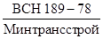
2.2. Проект искусственного замораживания грунтов должен быть увязан с проектом производства основных работ.
2.3. Технический проект и рабочие чертежи по замораживанию грунтов должны разрабатываться в объемах, предусмотренных в соответствии с эталонами Метрогипротранса, утвержденными Министерством транспортного строительства.
2.4. Величина заглубления замораживающих колонок в водоупор, определяемая проектом, должна быть достаточной для восприятия полного гидростатического давления при вскрытии водоупора выработкой под данное сооружение.
2.6. При интенсивном городском движении, а также при наличии больших зданий и значительного числа подземных сооружений, препятствующих осуществлению работ с поверхности, замораживающие колонки можно устанавливать в специально пройденных для этой цели выработках (штольнях, траншеях, камерах). Размер и конструкции выработок устанавливаются с учетом условий монтажа и эксплуатации замораживающих колонок.
2.7. При замораживании больших массивов и значительном количестве подземных коммуникаций разрешается комбинированное расположение замораживающих колонок (сочетание наклонных с вертикальными).
При расположении колонок в непосредственной близости от коммуникаций для предотвращения их замерзания предусматриваются мероприятия по п. 2.5 или осуществляется зональное замораживание.
2.8. При замораживании грунтов непосредственно из забоя выработок или штолен и камер допускается веерное расположение замораживающих колонок.
2.9. Конструкция замораживающих скважин определяется проектом в зависимости от геологических и гидрогеологических условий пересекаемых грунтов, способа и глубины бурения, направления скважин и наличия поглощающих грунтов.
2.10. При двух пластах поглощающих пород, над каждым из которых залегают неустойчивые грунты, применяют замораживающие скважины с двумя колоннами обсадных труб, а при одном слое - с одной колонной. При отсутствии поглощающих пород применяются замораживающие скважины простейшей конструкции.
2.11. Рекомендуемый диаметр направляющей трубы (кондуктора) при замораживающей колонке диаметром 100/114 мм:
при бурении скважин без обсадки - 150 - 200 мм;
при бурении скважин с одной колонной обсадных труб - 200 - 250 мм;
при бурении скважин с двумя колоннами обсадных труб 250 - 300 мм.
2.12. Направляющая труба (кондуктор) при вращательном способе бурения должна иметь длину не менее 4 м, для вертикальных скважин - не менее 3 м.
2.13. Замораживающая колонка должна состоять из замораживающей трубы, оголовника, питающей трубы и башмака. Трубы должны применяться согласно п. 2.76 настоящей Инструкции. Нижняя часть колонки должна быть выполнена в форме конуса длиной 15 см.
2.14. Устье замораживающей колонки должно быть снабжено головкой, которая может быть сборной, состоящей из нескольких частей, или литой. В головке должна быть вмонтирована гильза для термометра и трубки для присоединения питающей и отводящей труб.
2.15. Питающие и отводящие трубы замораживающих колонок должны присоединяться к штуцерам коллектора и распределителя посредством прорезиненных шлангов и газовых труб на муфтах.
2.16. Минимальная мощность h (в м) водоупорного слоя, подстилающего замороженные водоносные грунты, определяется по формуле:
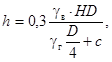
где D - диаметр выработки, м;
H - давление столба воды на основание подошвы водоупора, м;
gв - объемная масса воды, кг/м3;
gr - объемная масса грунта, кг/м3;
с - коэффициент сцепления, кгс/м2.
2.17. Ледогрунтовое днище образуется с помощью периферийных наклонных или дополнительных скважин в пределах контура выработки.
Для того чтобы избежать промораживания пород внутри выработки, рекомендуется при наличии специального оборудования выше проектируемого днища в пределах контура выработки применять зональное замораживание.
2.18. Толщину днища (подушки) h (в м) из замороженного грунта можно определять по формуле
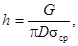
где G - сила, стремящаяся срезать подушку, тс;
sср - допускаемое напряжение на сдвиг мерзлого грунта, кгс/см2 (приложение 1).
2.19. Количество центральных замораживающих скважин, необходимых для образования искусственного днища расчетной толщины, определяется по формуле
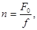
где F0 - площадь, подлежащая замораживанию центральными скважинами, м2;
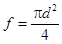
2.20. Для расчета толщины ледогрунтового ограждения из замороженных грунтов определяют нагрузку на нее и строят эпюру давления грунтов.
Горизонтальное давление грунтов P (в тс/м2) вычисляют по формулам:
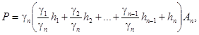
для однородных грунтов
P = g · Н · Аn, (5)
где g1,..., gn - объемный вес отдельных слоев грунтов, тс/м3;
h1,.., hn - толщина соответствующего слоя грунта, м;
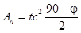
Коэффициент распора An для отдельных видов грунта имеет следующее значение: для мелкозернистых песков и плывунов, а также разжиженных грунтов An = 0,757; для гальки, щебня, гравия, песка An = 0,526; для наносов, слежавшихся грунтов, пластичных глин An = 0,387; для гипсов, бурых и неплотных каменных углей, глинистых сланцев An = 0,164; для плотных сланцев, средней плотности известняков и песчаников An = 0,017; для кварцевых пород, габбро An = 0,004; для плотных кварцитов, кремния, базальта An = 0,0012.
2.21. При определении давления несвязных грунтов, залегающих ниже уровня грунтовых вод, учитывают взвешивающее действие воды и в выражение (4) подставляют объемный вес взвешенных в воде частиц грунта, gвз (в тс/м3), определяемый по формуле
gвз = (g0 - 1) · (1 - 0,01m), (6)
где g0 - удельный вес грунта, т/м3;
т - влажность грунта, %
При этом к значению давления, вычисленному по формуле (4) и (5), прибавляется величина полного гидростатического давления.
2.22. Необходимая толщина Е (в см) цилиндрического ледогрунтового ограждения ствола шахты круглого сечения глубиной до 100 м определяется по формуле Ляме - Годолина
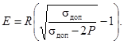
Толщина цилиндрического ледогрунтового ограждения шахты глубиной свыше 100 м может быть определена по формуле Домке
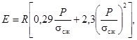
где R - радиус ствола в проходке, см;
Р - максимальное давление на внешнюю поверхность цилиндра, передаваемое от окружающих грунтов, кгс/см2;
sсж - предел прочности замороженного грунта на сжатие, кгс/см2;
sдоп - допускаемое напряжение на сжатие для замороженного грунта, кгс/см2;
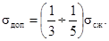
Значения пределов прочности на сжатие замороженных грунтов в зависимости от температуры приведены в приложении 2.
2.23. Толщину ледогрунтового ограждения котлованов определяют по методам расчета подпорных стен по формуле
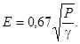
2.24. При круглом сечении конструкции ледогрунтового ограждения диаметр D (в см) окружности, по которой располагаются центры замораживающих скважин, определяется по формуле
D = Dпр + 2 · 0,6E, (10)
где Dпр - диаметр выработки в проходке, см;
0,6 - установленный опытом коэффициент распространения замороженной зоны от оси замораживающих скважин к центру выработки.
2.25. При определении линии замораживающих скважин учитывают отклонение скважин от проектного направления при их бурении:
для вертикальных скважин - 1 % длины;
для наклонных скважин - 2 % длины.
Если замораживающие скважины пробурены с отклонением от заданного направления, превышающим допустимые, но в сочетании со смежными, также отклонившимися, обеспечивают замкнутый контур и необходимую проектную толщину ледогрунтового ограждения, то такие скважины должны считаться удовлетворяющими требованиям настоящей Инструкции.
При нарушении этого требования для устранения возможности прорыва водонасыщенных грунтов или воды в выработку следует пробурить дополнительные скважины.
2.26. Диаметр окружности D (в м), на которой располагают центры замораживающих скважин с учетом среднего отклонения скважин, определяется по формулам:
при наклонных скважинах
D = Dпр + 1,2E + 0,02L (11)
при вертикальных скважинах
D = Dпр + 1,2E + 0,01L (12)
где L - длина скважины, м.
2.27. Число замораживающих скважин n (в шт.), располагаемых по окружности, определяется по формуле
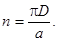
При расположении замораживающих скважин по прямолинейному контуру их число
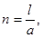
где а - расстояние между замораживающими скважинами, м;
l - периметр контура, м.
2.28. Расстояние между замораживающими скважинами определяется проектом, но не должно быть менее:
для стволов шахт - 1,2 м;
для эскалаторных тоннелей - 1,1 м;
для выработок при создании сплошного замороженного массива:
по контуру - 1,5 м;
внутри контура в ряду и между рядами скважин - 3 м;
для открытых выработок (котлованов) с расположением скважин в 2 ряда:
по контуру котлована внутреннего ряда - 1,25 м;
по контуру котлована внешнего ряда - 1,5 м;
расстояние между рядами - 3 м.
2.29. Для наблюдения за процессом замораживания должно быть предусмотрено бурение контрольных скважин:
гидрогеологических, оборудованных фильтром, - для наблюдения за колебаниями уровня грунтовых вод;
термометрических, оборудованных термометрами, - для измерения температур грунта.
2.30. Контрольных скважин должно быть:
гидрогеологических - не менее двух (располагаются внутри и вне замораживаемого контура);
термометрических - не менее 10 % общего количества основных замораживающих скважин (располагаются между замораживающими колонками и внешней границей ледогрунтового ограждения).
2.31. При наличии нескольких водоносных горизонтов необходимо наблюдать за колебаниями горизонта грунтовых вод на каждом водоносном горизонте.
2.32. Диаметр и глубина гидрогеологических и термометрических наблюдательных скважин определяются проектом.
Гидрогеологические скважины должны входить в водонасыщенные грунты.
2.33. В процессе замораживания одного или нескольких водонасыщенных слоев грунтов, заключенных между глинистыми прослойками, должен быть обеспечен свободный выход (подъем) грунтовых вод через разгрузочную скважину (трубу), закладываемую на глубину не менее 1 м в водоносный слой. Участок трубы в пределах водоносного слоя должен быть перфорированный.
2.34. Искусственное водопонижение вблизи замораживаемого участка, как правило, запрещается.
2.35. Потребное количество холода, необходимого для замораживания грунтов, должно рассчитываться в следующем порядке:
а) Определяются объемы грунта и грунтовой воды, подлежащие замораживанию:
общий объем замороженного грунта и грунтовой воды определяется по формулам
V1 = F · h1; V2 = F · h2;...; Vn = F · hn; (15)
объем воды, заключенный в отдельных слоях грунта, определяется по формулам
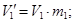 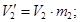 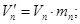
объем твердых частиц грунта определяется по формулам
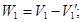 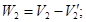 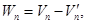
где F - площадь сечения ледогрунтового ограждения, м2;
hi - толщина отдельных слоев, м;
mi - удельное содержание воды в соответствующих слоях, %.
б) Определяется потребное количество холода:
количество холода q1 (в ккал), необходимое для охлаждения воды, заключенной в замораживаемых грунтах, от естественной температуры t1 до температуры замерзания воды t0 по формуле
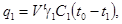
где V1 - объем воды, содержащейся в грунте, м3;
g1 - плотность воды (1000 кг/м3);
С1 - удельная теплоемкость воды, ккал/кг °C;
количество холода на ледообразование (скрытая теплота) по формуле
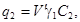
где C2 - скрытая теплота плавления льда, 80 ккал/кг;
количество холода q3 (в ккал), потребное для охлаждения льда от температуры t0 до средней температуры замораживания t2, по формуле
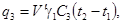
где С3 - удельная теплоемкость льда при средней температуре 0,54 ккал/кг °C;
количество холода q4 (в ккал), потребное для охлаждения грунтов (твердых частиц) от начальной до конечной температуры, определяют по формуле
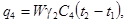
где W - объем твердых частиц грунта, м3;
g2 - плотность грунта, кг/м3;
C4 - теплоемкость твердых частиц грунтов, ккал/кг °C.
Общее количество холода Q (в ккал), потребное для замораживания расчетного объема грунта и грунтовой воды, определяется по формуле
Q = q1 + q2 + q3 + q4. (22)
2.36. Потери холода Qп (в ккал/ч) на охлаждение грунтов и грунтовой воды, примыкающих к ледогрунтовому ограждению, определяются по формуле
Qп = F' · q', (23)
где F' - наружная поверхность ледогрунтового ограждения с температурой 0 °C, м2;
q' - среднее количество тепла, притекающего на 1 м2 замороженной поверхности, имеющей температуру 0 °C, в течение часа, равное 6 (ккал/м2 · ч).
Величину q' можно определить по формуле
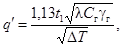
где t1 - естественная температура грунта, °C;
λ - коэффициент теплопроводности (незамороженного) грунта, ккал/м · ч °C (приложение 3);
Cг - теплоемкость грунта, ккал/кг °C;
DТ - промежуток времени между началом и концом замораживания, ч.
2.37. Количество холода Qн (в ккал/ч), передаваемого грунтам замораживающими трубами, или холодопроизводительность замораживающей станции (нетто), вычисляется по формуле
Qн = S · aн, (25)
где S - общая площадь внешних поверхностей замораживающих колонок, м2;
aн - коэффициент тепловосприятия от грунтов к наружной поверхности замораживающей колонки, ккал/м2 · ч.
Коэффициент тепловосприятия замораживающей колонки зависит от температуры охлаждающего рассола, внешнего диаметра замораживающих колонок, коэффициентов теплоперехода теплопроводности замороженного грунта и диаметра ледогрунтового ограждения.
В практических расчетах значение коэффициента тепловосприятия замораживающей колонки aн принимается при температуре рассола минус 20 - 25 °C 200 - 250 ккал/м2 · ч, при температуре минус 30 - 35 °C - 350 - 400 ккал/м2 · ч.
2.38. Площадь боковых поверхностей S (в м2) замораживающих колонок определяется по формуле
S = pdnL, (26)
где d - внешний диаметр замораживающих колонок, м;
п - количество замораживающих колонок;
L - длина замораживающих колонок, м.
2.39. Холодопроизводительность замораживающей станции (брутто) Qбр (в ккал/ч) определяется по формуле
Qбр = Qн + Qп + Q', (27)
где Q' - потери холода в рассольной сети и холодильной установке, которые можно принимать от 1 до 1,5 % холодопроизводительности (нетто) замораживающей станции.
Потери холода в рассольной сети рассчитывают по общим формулам теплопередачи отдельно в рассолопроводах, распределителе, коллекторе, в соединительных и отводящих трубках.
2.40. Время Т (в сутках), затраченное на замораживание грунтов, определяется по формуле
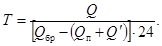
____________
1 По материалам книги Я.А. Дормана «Искусственное замораживание грунтов при строительстве метрополитенов». Издательство «Транспорт», 1971.
(обозначения те же, что и в предыдущих пунктах).
2.42. Для решения некоторых теплофизических задач можно применить расчеты по методу гидравлических аналогий (проф. В.С. Лукьянова), позволяющему выбрать выгоднейшие решения из различных вариантов. К числу таких задач относятся:
а) установление режима работы холодильной станции, необходимого для поддержания в проектном состоянии ледогрунтового ограждения во время сооружения объекта, и расчет температурного поля в период оттаивания грунтов;
б) расчеты температурных полей при схемах ступенчатого и зонального замораживания;
в) замораживание грунтов в условиях фильтрационного потока;
г) замораживание с предварительным нагнетанием холодной воды в грунты, обладающие высокой естественной температурой;
д) тепловые расчеты бетонной крепи, бетонируемой в замороженных грунтах с учетом влияния теплоты гидратации цемента температурного режима бетона и окружающих грунтов.
2.43. Прочность замораживающих грунтов зависит от температуры. Изменение температуры ледогрунтового ограждения по его толщине описывается логарифмической кривой: наибольшая температура будет у стенок замораживающей колонки и наименьшая (0 °C) - у наружной границы ледогрунтового ограждения. Во всех расчетах принимают среднюю температуру.
Расчеты показывают, что средняя температура ледогрунтового ограждения составляет 30 - 40 % температуры рассола, циркулирующего в замораживающих колонках. При температуре рассола минус 20 °C средняя температура ледогрунтового ограждения минус 6 - 10 °C.
2.44. Подбор мощности компрессоров и холодильного оборудования замораживающей станции производят по общим правилам холодильной техники, исходя из следующих параметров:
холодопроизводительность (брутто) замораживающей станции;
температура охлаждающего рассола.
Технические характеристики аммиачных и фреоновых компрессоров приведены в приложении 4.
2.45. Гидравлический расчет рассольной сети включает расчеты количества рассола, циркулирующего в различных участках сети, диаметра труб и выбора рассольного насоса.
Количество рассола Vp (в м3/ч), проходящего через поперечное сечение магистральных труб в единицу времени (расход рассола) в период образования ледогрунтового ограждения (активное замораживание), определяют по формуле
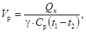
где Qк - холодопроизводительность компрессоров, работающих на объекте в указанный период, ккал/ч;
g - плотность раствора хлористого кальция заданной концентрации, кг/м3;
Ср - удельная теплоемкость раствора хлористого кальция при заданной температуре и концентрации, ккал/кг °C;
t1 - t2 - средняя разность температур подаваемого и возвращающегося рассолов в рассолопроводах, принимаемая равной 2 - 3 °C.
Примечание. Определение количества рассола Vp в период пассивного замораживания определяется проектом.
2.46. Пределы скоростей движения рассола: в питающих трубах - 0,6 - 1,5 м/с; в кольцевом пространстве замораживающей колонки - 0,08 - 0,20 м/с; в магистральных трубопроводах (рассолопроводах, рассолораспределителе, коллекторе) рекомендуется принимать 1,0 - 1,5 м/с.
2.47. Напор ΣHi (в м), развиваемый насосами для перекачки рассола, определяется по следующей формуле
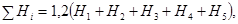
где H1 - гидравлические сопротивления трения в системе рассолопроводов, м;
H2 - то же в замораживающих колонках, м;
H3 - сумма местных сопротивлений в сети рассолопроводов, м;
H4 - то же в замораживающих колонках, м;
H5 - геометрическая высота подачи рассола, м.
2.48. Гидравлические потери сопротивления трению Hтр (в кг/см2) системы трубопроводов определяются по формуле Дарси - Вейсбаха
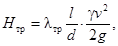
где l - длина трубопровода, м;
d - внутренний диаметр трубопровода, м;
dэ - эквивалентный гидравлический диаметр, м;
v - скорость движения рассола, м/с;
g - ускорение силы тяжести, равное 9,81 м/с2;
λтр - коэффициент гидравлического сопротивления трубопровода, учитывающий характер и физические свойства рассола;
g - плотность раствора хлористого кальция, кг/м3;
F - внутренняя площадь сечения труб, м2;
П - внутренний периметр сечения труб, м.
2.49. Гидравлический коэффициент сопротивления λтр турбулентного потока Re > 3100 определяется по формуле
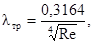
где Re -
коэффициент, равный 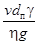
η - коэффициент вязкости рассола, кгс/м2;
dп - гидравлический диаметр, м.
2.50. В случае ламинарного потока гидравлический коэффициент трения определяется по формуле
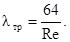
При Re < 2320 движение жидкости в трубах считается ламинарным.
При 2320 < Re < 13000 движение жидкости является переходным от ламинарного к турбулентному. При Re > 13000 имеет место турбулентное движение.
Режим движения рассола в рассольной системе переменный, а именно: ламинарный в кольцевом пространстве, турбулентный в рассольной сети и переходный в питающих трубах.
2.51. Мощность N (в кВт), расходуемая рассольным насосом, определяется по формуле
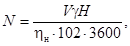
ηн - коэффициент полезного действия насоса.
2.52. Тип рассольного насоса выбирается по количеству циркулирующего в сети рассола и необходимому напору для преодоления гидравлических сопротивлений в сети. Гидравлические потери принимаются по опытным данным или определяются по общепринятым формулам для расчета потерь в трубопроводах.
2.53. Замораживающая станция должна быть расположена возможно ближе к участку замораживания грунтов, на территории строительной площадки или вблизи нее.
2.54. Размеры замораживающей станции должны соответствовать расчетному количеству и типам холодильного оборудования.
2.55. Стены замораживающей станции должны быть из несгораемых материалов, а высота зданий должна быть не менее 4 м.
2.56. Аппаратное отделение может быть расположено как в здании станции, так и вне его.
Высота аппаратного отделения должна быть не менее 3 м.
2.57. Электропусковая аппаратура должна размещаться в здании замораживающей станции в отгороженной части.
2.58. Проект электротехнических устройств замораживающей станции должен соответствовать действующим правилам устройства электротехнических установок.
2.59. Здание замораживающей станции должно иметь два выхода. Двери и окна здания должны открываться наружу.
2.60. Электрическое освещение в здании станции должно обеспечивать освещенность не менее 60 люкс.
Рекомендуется для освещения иметь два независимых источника.
2.61. Кнопка аварийного отключения электрического привода компрессоров должна быть расположена вне здания на наружной стене, в непосредственной близости к выходу.
2.62. Здание станции должно иметь принудительную вытяжную вентиляцию.
2.63. При размещении холодильных машин необходимо выдержать следующие размеры проходов:
главный проход и проход между электросборками и выступающими частями не менее 1,5 м;
между выступающими частями машин не менее 1 м;
между гладкой стеной и машиной (или аппаратом) - не менее 0,8 м, если проход не является главным для обслуживания, и не менее 0,5 м (для мелких машин) при отсутствии прохода.
2.64. При установке горизонтальных компрессоров с ременной передачей цилиндры должны располагаться в сторону, противоположную двигателю.
2.65. Взаимное расположение основных частей холодильного оборудования должно обеспечивать наименьшую длину трубопроводов между ними.
2.66. В схеме трубопроводов должна быть предусмотрена возможность отсоса аммиака из любого аппарата (на случай утечки аммиака) через мосты переключений на всасывающих линиях.
2.67. Аммиак из холодильной установки должен выпускаться в воду через соответствующий смеситель, причем для поглощения 1 кг аммиака должно быть не менее 3 л воды.
2.68. Рассольная сеть должна быть запроектирована с наименьшим количеством соединений, стыков и фасонных частей.
Примечание. К рассольной сети относятся: рассолопроводы прямой и обратный, распределитель и коллектор, замораживающая колонка с питающей и обратной трубами.
2.69. Рассолопровод должен быть минимальной длины, при длине рассолопровода более 150 м должны быть предусмотрены компенсаторы. Количество и тип компенсаторов устанавливаются проектом.
2.70. Рассолопровод может укладываться как в траншее, так и на поверхности с соответствующей теплоизоляцией.
2.71. Монтаж рассольной сети производится в соответствии со специальными чертежами проекта.
2.72. Распределительные и коллекторные трубопроводы должны быть размещены в форшахте или галерее.
В отдельных случаях допускается размещать эти трубопроводы на поверхности с устройством теплоизоляции.
2.73. Замораживающие колонки должны присоединяться к распределительному и коллекторному трубопроводам по схеме с попутным движением жидкости.
2.74. На коллекторных и распределительных трубопроводах в наиболее высоких точках должны устанавливаться воздухоспускные устройства.
2.75. При определении размеров форшахты необходимо учитывать размещение распределительных коллекторов и трубопроводов, соединительных труб от замораживающих колонок и проходы для обслуживающего персонала. Форшахта должна быть надежно закреплена.
для рассолопроводов по ГОСТ 8734-75;
для распределителя и коллектора по ГОСТ 8734-75 или 10704-76;
для замораживающих колонок - насосно-компрессорные по ГОСТ 633-63 или бесшовные стальные по ГОСТ 8732-70, 8734-75;
питающие и отводящие - по ГОСТ 3262-75 или полиэтиленовые, для больших глубин - высокопрочные марки ТЭК.
2.77. После создания ледогрунтового ограждения проектных размеров работа замораживающей станции должна обеспечивать только поддержание грунта в замороженном состоянии при заданных температурах и осуществляться по специальному режиму или при уменьшении количества находящихся в работе компрессоров. Указанный режим и количество рабочих компрессоров для этого периода устанавливаются проектом и должны корректироваться в процессе производства работ по данным наблюдений за температурами в термометрических скважинах.
2.78. Рекомендуется при соответствующих условиях предусматривать также локальный, зональный, дифференцированный методы замораживания, а также использование мерзлых грунтов в качестве ограждающих несущих конструкций при проходке глубоких котлованов. Замороженные стены котлованов необходимо защищать теплоизоляцией путем покрытия их матами по деревянному каркасу с оставлением воздушной прослойки 15 - 20 см между матами и ледогрунтовой стенкой.
2.79. Производство строительных работ в пределах, ограниченных ледогрунтовым ограждением, разрешается только после составления акта о приемке ограждения.
2.80. Разработка грунтов под защитой ледогрунтового ограждения производится в соответствии с проектом и требованиями глав СНиП. Применение гидромеханизации и буровзрывных работ разрешается при соблюдении мероприятий, гарантирующих сохранность ледогрунтового ограждения. Для взрывов замороженного грунта следует применять взрывчатые вещества, не чувствительные к низким температурам.
2.81. Во время выемки грунта из земляной выработки при положительных температурах воздуха должна быть обеспечена защита замороженной стенки от действия атмосферных осадков и солнечных лучей при строгом контроле за состоянием ледогрунтового ограждения и своевременной корректировкой режима работы замораживающей станции в целях сохранения размеров ограждения и ее температуры.
2.82. При обнаружении в процессе разработки грунта замораживающих колонок, отклонившихся внутрь выработки, их необходимо отключить от распределителя и коллектора, удалить из них рассол и затем отрезать часть, выступающую внутрь выработки.
2.83. Рекомендуется стволы шахт метрополитенов с большим притоком воды в коренных породах проходить с предварительным замораживанием на полную глубину ствола.
2.84. Применение низких температур рекомендуется при замораживании грунтов, содержащих рассолы крепостью свыше 3° Be', воду с температурой выше плюс 20 °C, проточную воду, движущуюся со скоростью, превышающей 30 м/сутки, при значительных отклонениях замораживающих колонок.
3. ОРГАНИЗАЦИЯ И ПРОИЗВОДСТВО РАБОТ
Бурение скважин и монтаж замораживающих колонок
3.1. Разбивка мест заложения скважин должна производиться согласно «Технической инструкции по производству геодезическо-маркшейдерских работ при строительстве транспортных тоннелей» (ВСН 160-69 Минтрансстроя).
3.2. До начала производства работ необходимо уточнить расположение подземных коммуникаций (телефона, газа, водопровода, кабельной сети и др.) с соответствующими службами подземного хозяйства и осмотреть здания и сооружения, расположенные в зоне и вблизи зоны замораживания грунтов, для проверки их состояния.
3.3. При выборе способов бурения скважин должны учитываться скорость бурения, стоимость буровых работ, необходимость обеспечения минимальных отклонений скважин и предотвращения выноса грунта.
3.4. Бурить вертикальные скважины можно вращательным, ударным или комбинированным способом. Бурить наклонные скважины рекомендуется вращательным способом станками шпиндельного типа (приложение 5). В ряде случаев, при глубине скважин более 75 м, рекомендуется применять роторное бурение. Выбор способа бурения и бурового оборудования обосновывается в проекте.
3.5. Бурить скважины вращательным способом необходимо с промывкой глинистым раствором, качество которого должно систематически контролироваться. В приложении 6 даны характеристики насосов для промывки.
3.6. В устойчивых, неразмывающихся грунтах промывка может производиться водой.
3.7. Глиноемники для глинистого раствора должны устраиваться из трех секций, разделенных перегородками с двумя «отверстиями размером 20´20 см в каждой.
Емкость каждой секции при бурении скважин в песчаных и супесчаных грунтах в зависимости от объема бурения рекомендуется принимать в пределах от 10 до 50 м3.
3.8. Для работы в зимних условиях должен предусматриваться подогрев глины и глинистого раствора до плюс 30 - 40 °C.
3.9. Глинистый раствор должен удовлетворять следующим условиям (при температуре плюс 15 °C):
плотность 1,15 - 1,25 т/м3 по ареометру;
вязкость 20 - 25 с по стандартному полевому вискозиметру СПВ-5;
коллоидальность 95 - 97 % по гранулированному стеклянному цилиндру емкостью 100 м3;
содержание песка не выше 5 - 7 % по отстойнику Лысенко.
3.10. При приготовлении глинистого раствора рекомендуется исходить из следующего количества глины и воды на 1 м3 раствора (табл. 1).
Таблица 1
|
Содержание глины в растворе по массе в % |
Потребное количество на 1 м3 раствора |
||
|
глины в воздушно-сухом состоянии, кг |
воды в л |
||
|
1,10 |
15 |
165 |
935 |
|
1,14 |
20 |
230 |
910 |
|
1,17 |
25 |
290 |
880 |
|
1,20 |
30 |
360 |
840 |
|
1,24 |
35 |
430 |
810 |
|
1,29 |
40 |
520 |
770 |
3.11. Глинистый раствор для сохранения постоянства требуемых показателей должен очищаться от шлама и периодически заменяться.
Очищается глинистый раствор пропусканием его по циркуляционной системе из деревянных желобов с перегородками.
Устройство циркуляционной системы должно удовлетворять следующим требованиям:
ширина желоба не менее 0,3 м;
высота не менее 0,25 м;
уклон 1 - 0,75 см на 1 м.
Через каждые два метра на высоту 0,1 м от нижней кромки желоба делаются перегородки (перепады).
Общая длина желобов в зависимости от глубины и диаметра скважины, а также от свойства буримых пород должна быть не менее 15 м.
На всю систему должно устанавливаться 1 - 3 промежуточных отстойника сечением 1,0´1,0 м, глубиной 0,5 - 0,75 м.
3.12. При бурении рекомендуется очищать глинистый раствор способом принудительной очистки на вибрационных ситах или сепараторах.
3.13. При бурении скважин в трещиноватых, кавернозных и крупнопористых грунтах, поглощающих воду, должны применяться растворы бентонитовых глин или вязкие глинистые растворы, получаемые добавлением жидкого стекла или кальцинированной соды.
Сода вносится в раствор в количестве от 1 до 3 % массы (глины).
Жидкое стекло (силикат натрия) плотностью
1,50 - 1,56 с модулем 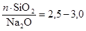
3.14. Для предотвращения потерь промывочного раствора при бурении поглощающих грунтов рекомендуется также тампонировать скважину глинистым раствором состава 1:2 (расход раствора 5 - 10 м3 на 1 м мощности поглощающего грунта).
3.15. Если над поглощающим грунтом залегает неустойчивая порода, ее необходимо перекрыть обсадными трубами. В этом случае скважина тампонируется после закрепления ее обсадными трубами.
Направляющая труба (кондуктор) должна быть установлена под наблюдением маркшейдера и надежно закреплена. Одновременно необходимо принять меры, предупреждающие просачивание глинистого раствора на поверхность при бурении.
3.16. При бурении вертикальных скважин ударным способом первая труба колонны обсадных труб может служить направляющей трубой (кондуктором). В этом случае первая труба должна опускаться строго по отвесу и проверяться. При отклонении направляющей трубы (кондуктора) от заданного проектного направления должны быть сделаны необходимые исправления.
3.17. Для предупреждения отклонения скважин от проектного направления при бурении должны быть приняты следующие меры:
а) вышка и буровой агрегат должны быть установлены на прочном основании;
б) перед началом бурения необходимо тщательно проверить установку вышки станка;
в) не допускать забуривания и бурения скважин без направляющей трубы неисправным буровым станком, шпинделем, имеющим во втулке большой люфт;
г) проверять положение направляющей трубы и при необходимости делать нужные исправления;
д) центрированно закреплять штанги в патроне;
е) не употреблять для работы погнутые штанги и колонковые трубы;
ж) производить забуривание скважины при минимальной частоте вращения;
з) применять при бурении «фонари» длиной не менее 4 м, пустотелые, при толщине стенок труб 4 - 5 мм, со сквозной штангой;
и) при бурении в породах перемещающейся твердости употреблять удлиненный «фонарь» или колонковый снаряд (длиной не менее 6 м);
к) при переходе во время бурения от мягких пород к твердым ограничивать подачу снаряда на забой и одновременно уменьшать осевое давление и частоту вращения бурового снаряда;
л) не применять при большом диаметре скважины штанги малого диаметра;
м) не применять затупившийся режущий инструмент.
3.18. Для регулирования подачи промывочной жидкости в скважину на нагнетательной линии насоса должен быть установлен тройник с вентилями или трехходовой кран.
3.19. Для предупреждения зашламования скважин при бурении с промывкой храпок всасывающего шланга следует устанавливать в приемнике на высоте 0,3 - 0,4 м от дна и по возможности чаще чистить глиноемник и промежуточные отстойники.
3.20. При бурении скважин вращательным способом должны применяться следующие наконечники:
долото «РХ» с «фонарем» для бурения сплошным забоем по мягким сыпучим грунтам;
долото трехшарошечное с «фонарем» для бурения сплошным забоем по крепким грунтам и грунтам средней крепости;
коронку с колонковой трубой при необходимости получения керна в твердых глинистых грунтах при бурении в крепких грунтах;
штыревые долота для хрупких очень крепких грунтов.
3.21. Трехшарошечные долота должны применяться следующих типов:
«М» - для мягких грунтов;
«С» - для средних грунтов;
«Т» - для грунтов выше средней крепости;
«К» - для наиболее крепких грунтов.
3.22. Долота должны быть армированы твердыми сплавами, для чего могут быть применены шихтовой сплав «ВОКАР», металлокерамический сплав типа ВКЗ и трубчатый зерновой сплав «ЛИКАР».
3.23. При бурении с отбором керна применяются коронки следующих типов:
- зубчатые стальные коронки, ребристые коронки КР-1, КР-2 и КР-3, а также мелкорезцовые коронки МР-2, СМ-2 для бурения рыхлых и мягких грунтов;
- при бурении грунтов средней твердости коронки МР-2; СМ-2; МР6-1 и БТ-4;
- коронки СМ1, СТ1, а также самозатачивающиеся коронки БК, ТП-3 и БТ-46 для наиболее крепких пород.
3.24. Зазор между долотом и «фонарем» должен быть в пределах 10 - 20 мм. Скважины сплошным забоем должны буриться бурильными штангами диаметром не менее 50 мм.
3.25. Осевое давление снаряда на забой в зависимости от характера проходимых пород и диаметра долота определяется по табл. 2.
Таблица 2
|
Суммарное давление на долото, в кг при грунтах |
||||
|
вязкая глина |
твердая слоистая глина |
слоистый песчаник |
песок |
|
|
150 |
350 - 450 |
550 - 700 |
500 - 1000 |
250 - 300 |
|
135 |
250 - 350 |
450 - 600 |
500 - 900 |
200 - 250 |
|
115 |
250 - 300 |
350 - 500 |
400 - 800 |
200 |
3.26. При турбинном и роторном бурении оптимальные условия эксплуатации трехшарошечных долот приведены в табл. 3.
Таблица 3
|
Диаметр долота, мм |
Частота вращения долота, об/мин |
Осевая нагрузка на долото, тс |
Подача раствора, л/с |
|
|
6 |
133 |
120 |
4 |
10 |
|
6А |
140 |
120 |
4 |
10 |
|
7 |
161 |
170 |
5 |
15 |
|
8 |
190 |
500 |
8 |
20 |
3.27. При колонковом бурении частоту вращения снаряда следует назначить по табл. 4.
Таблица 4
|
Частота вращения шпинделя, об/мин |
Средняя окружная скорость коронки, м/с |
||
|
наружный |
внутренний |
||
|
130 |
110 |
120 - 180 |
0,76 - 1,13 |
|
115 |
90 |
120 - 180 |
0,63 - 0,97 |
3.28. Скорость восходящего потока глинистого раствора принимают 0,3 - 0,5 м/с и более в зависимости от скорости бурения; количество глинистого раствора, требуемого при бурении скважины при диаметре бурильных штанг 50 мм приведено в табл. 5.
Таблица 5
|
Количество глинистого раствора, л/мин, при диаметре скважины, мм |
||||
|
150 |
135 |
115 |
100 |
|
|
0,25 |
235 |
175 |
126 |
88,5 |
|
0,30 |
285 |
205 |
150 |
106 |
|
0,35 |
330 |
240 |
176 |
124 |
|
0,40 |
376 |
276 |
200 |
140 |
3.29. Резцы коронок при колонковом бурении изготовляются из пластинок металлокерамических твердых сплавов РЭ или ВК (победит):
прямоугольные пластинки формы Г-41 и Г-51 - для бурения пород средней крепости;
косоугольные пластинки формы Г-54 и Г-52 - для бурения слабых грунтов;
ромбические пластинки формы Г-54 и Г-52 - для бурения в мягких породах;
восьмигранные пластинки формы Г-53 - для бурения в твердых и крепких породах.
3.30. Угол заточки резцов должен быть 50 - 65° для бурения пород средней крепости и 50 - 40° для бурения мягких пород. Армирование резцов твердыми сплавами должно производиться с помощью газовой сварки. Применение электросварки не допускается.
3.31. Скважины должны буриться ниже глубины замораживания на величину отстоя шлама, но не менее 1 м.
3.32. Скважина по окончании бурения вращательным способом должна быть промыта глинистым раствором при максимальной подаче насоса и с вращением снаряда на забое в течение 20 - 30 мин во избежание оседания шлама.
При ударном бурении скважина по окончании бурения должна быть очищена от возможных осадок грунта.
3.33. Опускание замораживающей колонки должно производиться немедленно по окончании бурения и промывки скважин.
3.34. В скважинах, пробуренных с обсадными трубами, эти трубы извлекаются после опускания замораживающих колонок.
3.35. Каждая пробуренная скважина и опущенная в нее замораживающая колонка должны быть приняты с составлением паспорта (приложение 7).
3.36. Нижняя часть замораживающей колонки перед опусканием в скважину должна быть опрессована гидравлическим давлением на избыточное давление 25 кгс/см2 в течение 5 - 10 мин.
3.37. Трубы, составляющие замораживающую колонку, должны соединяться муфтами на резьбе с обваркой соединений высококачественными электродами.
- путем опрессовки на избыточное давление 25 кгс/см2 в течение 5 - 10 мин отдельных муфтовых соединений по мере опускания колонки в скважину и опрессовки всей колонки в целом; при опрессовке каждого муфтового соединения необходимо путем осмотра убедиться в отсутствии просачивания жидкости в сварочных швах;
- наблюдениями за уровнем жидкости, заполняющей, колонку в течение трех суток, если за указанный срок высота поверхности жидкости изменится не более чем на 3 мм, колонка считается годной для эксплуатации.
3.39. Опрессовка замораживающей колонки должна производиться:
при температуре воздуха выше 0 °C - водой;
при температуре воздуха ниже 0 °C - раствором хлористого кальция при опускании колонки в замороженный грунт.
3.40. На каждой замораживающей колонке должна быть вывешена табличка с указанием ее номера.
3.41. Гидрогеологические и термометрические скважины бурятся тем же способом, что и скважины для замораживания. Гидрогеологические скважины в толще песчаных и супесчаных водоносных грунтов рекомендуется бурить ударным способом.
3.42. В термометрическую скважину должна опускаться колонка с конусом, с обваркой соединений отдельных звеньев труб и испытыванием их на водонепроницаемость согласно п. 3.38. Допускается соединение отдельных звеньев труб сверткой муфт на льне и сурике с последующим гидравлическим испытанием на водонепроницаемость.
Разбивка мест заложения замораживающих скважин и измерение их отклонений от заданного направления
3.43. Скважины разбиваются относительно основных осей сооружений, выносимых от пунктов геодезической основы и закрепляемых постоянными знаками. Точность выноса осей должна быть в пределах 10 мм, а точность разбивки скважин - в пределах 30 мм.
3.44. В случае невозможности произвести разбивку скважин от осей сооружений (застроенность участка и другие причины) разбивка производится непосредственно от геодезической основы.
3.45. Местоположение скважин, расположенных по криволинейному контуру, определяется в полярной системе координат от центра сооружения.
Если возможно произвести разбивку от центра, полярные координаты скважин переводят в координаты системы, принятой для данного строительства, и разбивка осуществляется от пунктов геодезической основы.
3.46. Наклонные скважины при замораживании грунтов под зданиями, подземными коммуникациями и другими сооружениями, а также при замораживании днища вертикальных выработок разбиваются исходя из проектных данных.
3.47. Разбивочные данные корректируются в зависимости от фактического положения конструкций по исполнительным чертежам, а в случае отсутствия или ненадежности данных - по контрольным шурфам.
3.48. Все изменения проектного расположения скважин должны согласовываться с проектной организацией.
3.49. Положения устьев скважин, закрепленные в натуре, передаются буровому мастеру. Передача оформляется в буровом журнале с записью глубин (длин) бурения и номеров скважин.
3.50. Наклонные замораживающие скважины на поверхности при сооружении наклонных тоннелей разбиваются от основных осей эллипса расположения скважин, закрепляемых на дневной поверхности. Расчет центра эллипса и разбивка скважин производятся на отметке нулевого горизонта (на средней планировочной отметке строительной площадки), установленной проектом.
3.51. Центр и оси эллипса разбиваются от геодезической основы, принятой для строительства тоннелей, и закрепляются постоянными знаками (бетонными монолитами), а направление осей - монолитами или специальными марками в стенах фундаментальных зданий. Направления осей закрепляются с расчетом видимости монолитов (знаков) из центра эллипса и сохранности их на весь период производства работ по бурению и монтажу колонок. Рекомендуется при наличии условий на строительной площадке выносить и закреплять за пределами эллипса нормально к основной оси смещенные малые оси эллипса с определением величины смещения по оси и выноски на них осей скважин.
3.52. Направляющие трубы (кондуктора), устанавливаемые при бурении вертикальных скважин, должны быть проверены с помощью отвеса или уровня.
3.53. Перед установкой направляющих труб (кондукторов) для наклонных скважин с углом наклона до 60° траншеи для них разбиваются в плане и профиле от основных осей эллипса. Дно траншеи профилируется по нивелиру или шаблону в соответствии с расчетными данными положения низа трубы (кондуктора).
3.54. Перед установкой направляющей трубы (кондуктора) на дне траншей укладывается и укрепляется основание под кондуктор в виде деревянных брусьев или специальных металлических скоб, вбиваемых в грунт. Основание укладывается по линии проектного положения низа направляющих труб (кондукторов) с помощью наклонного луча трубы теодолита, установленной по заданному уклону, или инструментальным способом согласно требованиям «Технической инструкции по геодезическим и маркшейдерским работам при инженерных изысканиях, проектировании и строительстве подземных сооружений» (ВСН 160-69).
3.55. Точность установки направляющих труб (кондукторов) для наклонных скважин определяется в зависимости от длины скважины, длины кондуктора и установленного допуска отклонения скважины при бурении.
Погрешность установки 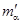 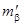
в плане
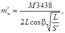
в профиле
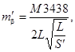
где М - предельно допустимое отклонение скважины при бурении, м;
L - длина скважины, м;
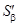
b - угол наклона скважины к горизонту;
a - в плане.
Допускается параллельное смещение устанавливаемого кондуктора до 30 мм во всех направлениях.
3.56. По окончании бурения скважины и монтажа колонки производится съемка скважины в плане и по высоте от основных осей сооружений и высотных реперов с точностью 30 мм.
Примечание. За устье принимается центр верха замораживающей колонки, расположенной в устье кондуктора на момент измерения ее искривления.
3.57. Работы по определению отклонений скважин выполняются в четыре этапа:
измерение искривлений скважин до глубины, в пределах которой обеспечена прямая видимость источника света, опускаемого в скважину;
измерение искривлений за пределами видимости;
вычисление отклонений;
составление исполнительных чертежей.
3.58. При измерении отклонений скважин (вертикальных и наклонных) инструментальные наблюдения ведутся до максимальной глубины, на которой виден опускаемый в скважину источник света. После ухода источника света за пределы видимости ведется наблюдение за отсветом с фиксацией его глубины и направления отклонения (влево, вправо, вниз, вверх).
3.59. Перед измерением искривлений из скважины (замораживающей колонки) должна быть удалена вода, а устье колонки закреплено в кондукторе.
3.60. Искривления с помощью геодезических инструментов измеряются в соответствии с требованиями «Технической, инструкции по геодезическим и маркшейдерским работам при инженерных изысканиях, проектировании и строительстве подземных сооружений» (ВСН 160-69). Для вертикальных скважин рекомендуется применять гидроскопические инклинометры типа «Зенит-ИГ-2М, ВД-2 и И447-Д, разработанные Всесоюзным научно-исследовательским маркшейдерским институтом (ВНИМИ).
3.61. Искривления скважин (вертикальных и наклонных) под углом больше 80° в пределах видимости опущенного в скважину источника света измеряется с помощью лотаппарата и специальной палетки с метровой сеткой, а с углом наклона до 80° - с помощью теодолита.
Искривления скважин с бόльшими углами наклона, когда нельзя применять обычный инструмент, измеряются теодолитом с внецентренной трубой.
3.62. За пределами видимости источника света разрешается определять положение скважин глубиной до 75 м экстраполяцией на 1/4 измеренной длины, глубиной более 75 м - на длину не более 15 м.
3.63. Искривления скважин за пределами видимости источника света должны измеряться инклинометрами. Тип прибора выбирается в зависимости от конструкции скважины и требуемой точности измерения. Точность измерения, обеспечиваемая применяемыми приборами, должна быть в пределах установленных допусков отклонений скважин.
Искривления скважин с углом наклона 30° измеряются тросиковым инклинометром. Наблюдения измерения отклонений скважин производятся в соответствии с требованиями «Технической инструкции по геодезическим и маркшейдерским работам при инженерных изысканиях, проектировании и строительстве подземных сооружений».
3.64. При бурении скважин глубиной более 70 м рекомендуется производить промежуточные измерения искривления скважин в процессе работ в количестве, зависящем от геологических условий, конструкции скважин и характера искривлений.
3.65. В зависимости от применяемого прибора и методики измерений должна производиться оценка точности измеренных искривлений.
Ошибки в измерениях подсчитываются по каждому составленному сечению прогнозируемого ледогрунтового ограждения и результаты оценки указываются на исполнительных чертежах.
3.66. Фактическая глубина (длина) пробуренных скважин определяется путем измерения длины опускаемых питающих труб. В момент опускания питающих труб верх колонки нивелируется. По результатам измерений подсчитывается отметка конуса замораживающей колонки.
Ошибка в определении длины скважины не должна превышать 10 см.
3.67. На участках замораживания, где в результате отклонения скважин не гарантируется образование ледогрунтового ограждения проектных размеров, должны быть пробурены дополнительные скважины или увеличено время активного замораживания, обеспечивающее создание необходимой ледогрунтовой защиты. Выбор способа определяется в каждом конкретном случае технической и экономической целесообразностью: условиями бурения скважин и эксплуатации замораживающей станции, сроками производства работ, установленных генеральным графиком, и другими факторами.
а) план в масштабе 1:100 на нулевой отметке с показанием фактического расположения скважин, рассольной сети, замораживающей станции и других коммуникаций, связанных с исполнением работ по замораживанию;
б) план горизонтальных проекций скважин (сборное сечение) в масштабе 1:50;
в) развертка скважин по проектному контуру с показанием геологического разреза, положения скважин с указанием фактических и проектных отметок забоя (конуса), фактического уровня подземных вод и положения фильтров (по высоте) наблюдательных гидрогеологических скважин.
3.69. При замораживании грунтов наклонными скважинами для проходки эскалаторных тоннелей должны быть составлены следующие исполнительные чертежи:
а) проекции фактического расположения скважин на нормальную к оси наклонного хода плоскость в масштабе 1:50 с указанием габаритов выработки и проектного расположения скважин (сборное сечение);
б) нормальные к оси наклонного тоннеля сечения по скважинам (через 5 - 10 м) в масштабе 1:50 с литологической к гидрогеологической характеристикой грунтов, показанием проектного положения скважин и габаритов выработки; нормальные сечения должны быть составлены по всем характерным участкам геологического разреза выработки: на контактах слабых грунтов с крепкими, на горизонтах с малой теплопроводностью пород, на участках сильноводоносных пластов;
в) проекции скважин на вертикальную осевую плоскость наклонного тоннеля по правой и левой стороне в масштабе 1:100 с нанесением контура выработки, гидрогеологического разреза, уровня подземных вод и положения фильтров наблюдательных и гидрогеологических скважин;
г) план в масштабе 1:100 на нулевой отметке с указанием расположения скважин, рассольной сети, замораживающей станции и других коммуникаций, связанных с замораживанием.
Примечание. Для других выработок исполнительные чертежи должны быть составлены в соответствии с требованиями п. 3.68.
3.70. На все скважины должны составляться технические характеристики по форме, приведенной в приложении 8, заполняемые на основании записей в буровых журналах, паспортов скважин и контрольных маркшейдерских измерений.
3.71. На исполнительных чертежах наносятся расчетные радиусы замораживания грунтов в зависимости от фактического расположения скважин, на основании чего определяется, степень соответствия положения ледогрунтового ограждения проекту.
При этом необходимо учитывать неравномерность распространения замороженной зоны относительно линии расположения скважин и центра окружности ледогрунтового цилиндра скважины смещать в направлении центра выработки в соответствии с п. 2.24.
3.72. Исполнительные чертежи должны быть предъявлены комиссии по приемке работ по замораживанию, а копия их передана организации, осуществляющей проходческие работы.
3.73. Количество дополнительных вертикальных замораживающих скважин не должно превышать 10 % - количества основных скважин, при глубине замораживания до 100 м и 20 % - при глубине замораживания свыше 100 м. Для наклонных скважин соответственно 20 и 25 %.
В целях сокращения количества дополнительных замораживающих скважин рекомендуется бурить скважины сначала через одну, с тем, чтобы промежуточные скважины закладывать с учетом искривлений ранее пробуренных.
Монтаж замораживающей станции и рассольной сети
3.74. Монтаж компрессоров, теплообменных аппаратов и приборов замораживающей станции должен осуществляться в строгом соответствии с проектом и заводскими инструкциями.
3.75. Все аппараты замораживающей станции, работающие под давлением, до соединения их в общую систему должны быть предъявлены инспекции Котлонадзора для технического освидетельствования и регистрации.
3.76. Порядок регистрации и освидетельствования сосудов, работающих под давлением, указан в Правилах безопасности на аммиачных холодильных установках, изд. ВНИИХИ, 1966.
3.77. Техническое освидетельствование вновь устанавливаемых аппаратов инспектором Котлонадзора может не производиться, если смонтированные аппараты были осмотрены и испытаны на заводе-изготовителе и при транспортировке и монтаже не имели никаких повреждений, о чем администрация предприятия должна составить акт и представить его в инспекцию Котлонадзора при регистрации аппаратов.
3.78. Машины и аппараты, изготовленные на заводе, должны иметь паспорт и сопровождаться всеми необходимыми документами.
3.79. Все заводские паспорта, а также акты, составленные в процессе монтажных работ, должны находиться у главного механика участка или стройуправления.
3.80. До начала монтажных работ должны быть проведены необходимые мероприятия по охране труда монтажников, технике безопасности, а также по обеспечению пожарной безопасности.
3.81. До начала монтажа должны быть закончены все строительные работы по зданию замораживающей станции, сооружены фундаменты под машины и аппараты, устроены галереи для коллекторов, траншеи для рассолопроводов, водопровода, канализации и электрокабелей.
О правильности разбивки осей фундаментов, о качестве бетона и соответствии фундаментов проектным размерам должен быть составлен акт.
3.82. При бетонировании фундаментов для компрессоров должны соблюдаться следующие требования:
- перед укладкой бетона необходимо проверить надежность закрепления закладных частей, металлического каркаса и опорных плит и правильность устройства опалубки колодцев для анкерных болтов, обеспечивающего в последующем беспрепятственную выемку этой опалубки;
- возле закладных частей, служащих опорами для соответствующих частей компрессора, уплотнять бетон необходимо с особой тщательностью.
3.83. Верх фундамента не должен доводиться до проектной отметки на 30 - 50 мм, что необходимо для подливки рамы или станины оборудования.
3.84. Колодцы для анкерных болтов бетонируются бетоном марки не ниже 150 с применением мелкого гравия. Перед бетонированием колодцы должны быть тщательно очищены от остатков опалубки и мусора и промыты.
3.85. Подливка рамы (станины) компрессора должна производиться бетоном марки не ниже 150, причем при толщине подливки менее 40 мм допускается применение бетона с мелким заполнителем или цементно-песчаного раствора той же марки. Верхняя поверхность фундамента перед подливкой должна быть насечена, очищена и промыта. Подливка допускается только после установки и выверки оборудования.
3.86. Перед началом монтажа компрессора необходимо проверить по чертежу правильность расположения отверстий для фундаментных болтов и глубину заложения анкерных плит.
3.87. Каждый смонтированный компрессор, бывший ранее в работе, перед опробованием подлежит ревизии на месте; новые компрессоры, полученные непосредственно с завода, подлежат разборке и осмотру без полной ревизии.
3.88. По окончании сборки для проверки, регулировки и наладки работы необходимо произвести холостую обкатку компрессора без нагрузки с открытыми крышками и без нагнетательных клапанов в течение 2 ч.
3.90. Секции оросительного конденсатора перед установкой должны быть предварительно осмотрены и испытаны.
3.91. Поддон для оросительного конденсатора должен быть установлен на деревянных или каменных столбах. При этом должен быть обеспечен доступ для осмотра днища поддона, а также для подтяжки болтов (при разборном поддоне).
3.92. При монтаже конденсаторов все фланцевые соединения должны быть собраны на клингеритовых или паранитовых прокладках, смазанных графитной мастикой.
3.93. Конденсатор по окончании монтажа подлежит испытанию на плотность соединения:
в аммиачной части - сжатым воздухом при избыточном давлении 18 кгс/см2 в течение 18 ч, при этом допускается падение давления в течение первых 6 ч испытания не свыше 0,2 кгс/см2;
в водяной части - гидравлическим испытанием водой при постоянном избыточном давлении 6 кгс/см2 в течение 15 мин.
При испытании утечку воздуха выявляют путем покрытия соединений и швов мыльной пеной. Обнаруженные недостатки должны устраняться после снижения давления до атмосферного.
3.94. Кожухотрубный горизонтальный конденсатор типа КТГ должен быть установлен строго горизонтально. Все соединения должны быть уплотнены и не давать утечек в водяной части при гидравлическом избыточном давлении 6 кгс/см2 и в аммиачной части при избыточном давлении сжатого воздуха 18 кгс/см2.
3.95. Конденсатор элементный типа КЭ должен быть установлен вертикально. Аммиачная часть элементного конденсатора испытывается сжатым воздухом избыточным давлением 18 кгс/см2; водная часть - испытывается гидравлическим избыточным давлением 6 кгс/см2.
3.96. Секции и бак испарителя перед монтажом должны быть предварительно осмотрены и испытаны:
секция - гидравлическим избыточным давлением 24 кгс/см2;
бак - наполнением водой.
Бак испарителя должен быть установлен на деревянном или бетонном основании.
3.97. Секции испарителя соединяются коллекторами посредством фланцев с уплотнением соединений клингеритовыми или паранитовыми прокладками. Секции к баку должны крепиться полосовым железом на болтах.
3.98. Испытания кожухотрубных и вертикально-трубных испарителей производятся сжатым воздухом при избыточном давлении 12 кгс/см2. При этом давление не должно падать в течение 18 ч. Секции вертикально-трубного испарителя должны быть испытаны сжатым воздухом в баке испарителя, наполненном водой.
При испытании сжатым воздухом необходимо предварительно не менее двух раз продувать аммиачную часть кожухотрубного испарителя и отдельно секции вертикально-трубного испарителя для удаления загрязнений.
3.99. Противоточные предохранители должны монтироваться на бетонных фундаментах с выверкой по отвесу и уровню.
Предохранитель после монтажа должен быть испытан на плотность: аммиачная система - сжатым воздухом при избыточном давлении 18 кгс/см2, а водяная - гидравлическим избыточным давлением 6 кгс/см2.
3.100. Холодильная установка при расположении маслоотделителя вне машинного отделения должна иметь обратный клапан над маслоотделителем.
При расположении маслоотделителей в здании установка обратных клапанов не обязательна. В этом случае над маслоотделителем устанавливается специальный запорный вентиль, который должен быть запломбирован в открытом положении.
3.101. Аммиачный нагнетательный трубопровод в местах прохода через сгораемые стены и перекрытия должен быть изолирован от последних несгораемой изоляцией.
3.102. При монтаже трубопроводов для хладоагента следует следить, чтобы нагнетательные линии имели уклон 1 - 2 % в сторону конденсатора, всасывающие линии уклон 0,5 % в сторону испарителей.
3.103. Для аммиачных трубопроводов должны применяться исключительно бесшовные стальные (цельнотянутые) трубы по ГОСТ 8732-70.
Применять газовые и чугунные трубы для аммиачных трубопроводов запрещается.
3.104. Трубопроводы с арматурой и аппаратурой должны соединяться:
резьбовым штуцером - трубопроводы диаметром от 6 до 10 мм;
специальными аммиачными фланцами - трубопроводы диаметром свыше 10 мм;
соединением труб сваркой встык.
3.105. Фасонные части, вентили и сварные стыки должны располагаться не ближе 200 мм от стен.
3.106. Для предупреждения повышения давления в кожухотрубных, элементных конденсаторах и испарителях, а также в промежуточных сосудах и ресиверах должен быть предусмотрен выпуск аммиака в атмосферу через предохранительные клапаны по выкидной трубе.
3.107. Аммиачные трубопроводы после их монтажа должны быть продуты воздухом для удаления песка, окалины и пр.
3.108. Смонтированные рассольные магистральные трубопроводы должны быть испытаны водой с избыточным давлением 6 кгс/см2, которое не должно снижаться в течение 15 мин.
3.109. Для присоединения питающих и отводящих труб на распределителе и коллекторе должны устанавливаться штуцеры в количестве, превышающем на 10 - 15 % количество колонок. На штуцерах должны устанавливаться запорные пробковые краны диаметром, соответствующим диаметру питающих и отводящих труб.
3.110. Питающие трубы перед опусканием в колонку должны быть опрессованы воздухом с избыточным давлением 5 кгс/см2.
3.111. Нижний открытый конец питающей трубы не должен доходить до дна замораживающей трубы на 0,4 - 0,5 м, для чего к нему должен быть приварен стержень диаметром 10 - 12 мм.
3.112. Монтаж электрических установок замораживающей станции должен быть выполнен в полном соответствии с «Правилами технической эксплуатации и безопасности обслуживания электроустановок промышленных предприятий», утвержденными Госэнергонадзором.
Контрольно-измерительные приборы и устройства
3.113. Контрольно-измерительные приборы должны быть установлены:
на замораживающей станции для контроля за работой холодильных агрегатов и их регулирования;
в форшахте на рассольной сети для контроля за правильной и равномерной циркуляцией раствора хлористого кальция;
в зоне замораживаемых грунтов для контроля за процессом образования ледогрунтового ограждения.
3.114. На замораживающей станции должны быть установлены следующие контрольно-измерительные приборы и устройства:
а) аммиачные манометры - по одному на нагнетательной стороне компрессора и по одному (мановакуумметру) на всасывающей его стороне. Манометры должны быть установлены также на конденсаторах, испарителях, линейных ресиверах и промежуточных сосудах в отделителях жидкости. Кроме аммиачных манометров на каждом компрессоре должен устанавливаться масляный манометр со шкалой 0 - 6 кгс/см2.
Примечание. Аммиачные манометры должны иметь две шкалы: шкалу давлений и соответствующую ей шкалу температур. Аммиачные манометры должны быть с пластинчатой мембраной. Мановакуумметр на нагнетательной стороне должен иметь шкалу «Вакуум до 760 мм рт. ст. 0 - 25 кгс/см2», а на всасывающей стороне должен иметь шкалу «Вакуум до 750 мм рт. ст. 0 - 12 кгс/см2»;
б) проходные поплавковые регулирующие вентили ПРВ с аммиачным фильтром для поддержания постоянного уровня жидкого аммиака в испарителе и промежуточном отделителе жидкости;
в) воздухоотделитель для удаления из конденсатора или его ресивера воздуха и инертных газов;
г) дистанционные указатели уровня для наблюдения за уровнем жидкого аммиака в испарителе и промежуточном сосуде;
д) предохранительные клапаны на конденсаторе, линейном ресивере, промежуточном сосуде и маслоотделителе с выпуском газа в воздух;
е) ртутные термометры со шкалой от +30 до 150 °C на нагнетательной стороне компрессора и на конденсаторе;
ж) спиртовые термометры со шкалой от +30 до -60 °C на всасывающей стороне компрессора, на испарителе и регулирующей станции;
з) термометры на вводах и выводах поступающей воды на конденсатор и выводах из него.
3.115. На рассольной сети должны быть установлены следующие контрольно-измерительные приборы:
а) манометры не менее как по одному на нагнетательной линии у рассольного насоса, на прямой и обратной линиях рассольных коллекторов;
б) термометры на прямой и обратной линиях рассолопровода и на замораживающих колонках из расчета не менее одного термометра на пять колонок с учетом перестановки термометров;
в) дистанционные указатели уровня рассола в баке испарителя для наблюдения за утечкой рассола. Указатель уровня рассола должен быть оборудован звуковой сигнализацией, подающей сигнал при изменении уровня рассола в баке испарителя (уравномером, например ЦНИИгоросушения).
Примечания. 1. Рекомендуется устанавливать дифференциальные манометры для замеров количества циркулирующего раствора хлористого кальция в рассолопроводе и замораживающих колонках или рассоломеры, а на линии подачи свежей воды на конденсатор водомеры.
2. Рекомендуется применять разработанные Московским горным институтом счетчики холода.
3.116. В зоне замораживаемых грунтов должны быть установлены следующие контрольно-измерительные приборы:
а) измерители уровня грунтовых вод в гидрогеологических скважинах;
б) термометры не менее одного в каждой термометрической скважине.
Примечания. 1. В термометрических скважинах рекомендуется устанавливать термометры сопротивления.
2. Толщина и сплошность ледогрунтового ограждения может определяться ультразвуковым прибором УКЛЦ-1 и МАП-1.
3.118. На замораживающей станции в электрораспределительном устройстве на распределительном щите должны быть установлены следующие электрические контрольно-измерительные приборы со шкалами соответственно принятому эксплуатационному напряжению (6000, 380, 220 и 127 В):
а) общий щитовой вольтметр для контроля напряжения;
б) амперметры щитовые (с трансформаторами тока) для контроля электродвигателей компрессоров, рассольных и водяных насосов, генераторов возбуждения;
в) амперметры щитовые, общие, вводные (с трансформатором тока) для контроля питающей кабельной сети, распределительного устройства и распределительного щита замораживающей станции;
г) киловольтметры щитовые (с трансформаторами напряжения) для контроля напряжения в сети 6000 В и состояния распределительного устройства;
д) сигнальные контрольные блинкеры и лампы цветные по системе Ж.З.К. (желто-зелено-красные) - ПТЭ - МЭС СССР Министерства электростанций для контроля за положением приборов и аппаратуры;
е) счетчики электрической активности и реактивной энергии типа ИТ и ИТР.
Примечание. Все электрические контрольно-измерительные приборы должны быть щитового исполнения, технического класса точности измерения.
Контрольно-измерительные приборы должны подвергаться проверке и регулированию согласно «Правилам 12 - 58 организации и проведения проверки мер и измерительных приборов и контроля за состоянием измерительной техники, соблюдением стандартов и технических условий».
Предпусковые испытания и зарядка замораживающей системы аммиаком и раствором хлористого кальция
3.119. Маслоотделители и ресиверы для аммиака до соединения их в общую систему должны быть испытаны гидравлическим избыточным давлением 30 кгс/см2 или сжатым воздухом с избыточным давлением 20 кгс/см2 и предъявлены для технического освидетельствования инспекции котлонадзора. Маслоотделители и ресиверы (сосуды) должны быть зарегистрированы в инспекции котлонадзора.
3.120. Все аппараты и трубопроводы аммиачной системы после монтажа должны подвергаться генеральному испытанию на плотность воздушным избыточным давлением:
в сторону нагнетания - от нагнетательного запорного вентиля до регулирующей станции (маслоотделитель, конденсатор, ресивер, трубопровод) - 18 кгс/см2;
в сторону всасывания (испаритель, всасывающие трубопроводы) за регулирующим вентилем - 12 кгс/см2.
Одновременно нужно отрегулировать предохранительные клапаны, которые на всасывающей стороне должны открываться при избыточном давлении 12,5 кгс/см2, а на нагнетательной 18 кгс/см2.
3.121. Испытание после монтажа следует производить до изоляции трубопроводов и аппаратов.
3.122. Нагнетание воздуха в аппараты производится аммиачным компрессором в несколько приемов со ступенями 3 - 5 кгс/см2.
3.123. Нагнетание воздуха надо производить следующим образом: открыть запорный нагнетательный вентиль на компрессоре; открыть пробку или грязевик на всасывающем коллекторе при закрытом всасывающем вентиле и пустить в ход компрессор; сначала довести избыточное давление во всей системе до 12 кгс/см2, затем закрыть запорный вентиль регулирующей станции, в результате чего разъединяются нагнетательная и всасывающая линии, и продолжать нагнетать воздух в систему конденсации, т.е. маслоотделитель, конденсатор и ресивер до избыточного давления 18 кгс/см2.
3.124. Систему необходимо оставлять под давлением в течение 18 ч с фиксацией давления через каждый час.
Станция признается выдержавшей испытания на герметичность, если по истечении первых 6 часов давление снизится не более чем на 10 %, а в течение остального времени будет постоянным.
При удовлетворительных результатах генерального испытания аммиачной системы воздухом составляется акт и компрессор подготавливается к работе на аммиаке.
Примечания. 1. При воздушном испытании запрещается прибавлять аммиак в воздух.
2. Воспрещается заглушать предохранительные клапаны на компрессоре для достижения требуемого давления при испытании системы на герметичность.
3. Всасывающий вентиль на компрессоре во время испытания должен быть закрыт.
3.125. Перед заполнением системы аммиаком количество его следует определять, исходя из системы охлаждения, типа и величины аппаратов и нормы заполнения системы количества аммиака устанавливаются проектом или следующими нормами (в % емкости аппарата):
Кожухотрубные испарители........................................ 80
Вертикальнотрубные испарители............................... 80
Конденсаторы кожухотрубные, оросительные 100 % емкости
или элементные (с ресивером)..................................... ресивера
Переохладители............................................................. 100
Промежуточные сосуды............................................... 30
Трубопроводы жидкого аммиака................................ 100
Ресиверы (линейные или циркуляционные)............. 100
Примечание. Для пересчета объема аммиака в массовое количество среднюю плотность аммиака принимать 0,65 кг/л.
3.126. Аммиак для заполнения системы должен доставляться на замораживающую станцию в специальных баллонах и отвечать ГОСТ 6221-75.
При зарядке системы баллоны с аммиаком должны присоединяться к регулирующей станции посредством трубки диаметром 6 мм с накидными гайками, причем баллоны следует класть в наклонном положении головками вниз.
Количество фактически заряженного аммиака должно определяться взвешиванием баллонов в процессе зарядки.
При зарядке аммиачной системы производится дополнительная проверка плотности соединений трубопроводов и арматуры на утечку аммиака химическим индикатором - полоской бумаги, пропитанной раствором фенолфталеина (при утечке аммиака белые полоски бумаги краснеют).
3.127. После перехода в систему жидкого аммиака из первых баллонов компрессор должен быть пущен в работу, чтобы понизить давление в испарителе и обеспечить дальнейшее наполнение системы. При этом конденсатор при зарядке аммиаком должен охлаждаться водой, как при обычной работе холодильной установки.
Подогревание баллонов для ускорения выхода аммиака запрещается. Необходимо соблюдать меры предосторожности и иметь наготове аммиачные противогазы.
3.128. При наполнении системы приблизительно на 90 % расчетного количества аммиака производится пробное включение замораживающей станции в работу для проверки достаточности наполнения; при этом рассольная система должна быть заполнена раствором хлористого кальция.
3.129. При обратном заполнении баллонов аммиаком из холодильной установки норма заполнения баллона не должна превышать 0,5 кг на литр емкости баллона.
Баллоны могут быть заполнены не более чем на 75 % их емкости.
Сеть считается пригодной для эксплуатации, если в течение 15 мин давление опрессовки не изменяется и при осмотре сети не обнаруживается течи в трубах и их соединениях.
3.131. Концентрация рассола в рассольной системе должна соответствовать такой температуре замерзания его, которая на 5 °C ниже заданной рабочей температуры рассола.
Во избежание возможного замерзания рассола в трубах кожухотрубных испарителей концентрация рассола должна соответствовать температуре замерзания на 8 °C ниже рабочей температуры испарения аммиака.
3.132. Хлористый кальций для заполнения рассольной системы доставляется к замораживающей станции в кристаллическом виде или в виде готового раствора и должен соответствовать ГОСТ 450-70.
3.133. Секции испарителя должны быть полностью покрыты рассолом.
3.134. Количество кристаллического хлористого кальция для приготовления рассола заданной концентрации q (в т) определяется по формуле
q = V · qc, (39)
где V - емкость (объем) всей рассольной системы, подлежащей заполнению, м3;
qс - количество соли на 1 м3 воды при заданной концентрации раствора (приложение 9).
Концентрация раствора (плотность) должна измеряться при температуре 15 °C.
3.135. Количество кристаллического хлористого кальция для пополнения рассольной системы в процессе эксплуатации замораживающей станции следует принимать из расчета 30 кг на 1 м2 поверхности установленных испарителей за один месяц.
3.136. На месте работ должен быть запас хлористого кальция из расчета заполнения 25 % объема рассольной системы.
3.137. После заполнения аммиачной и рассольной систем замораживающая станция и рассольная сеть включаются в пробную работу (пусковой период).
В течение этого периода должны быть окончательно отрегулированы машины и аппараты, проверены в работе все замораживающие колонки, замораживающая станция и рассольная сеть. Вся система должна быть подготовлена к эксплуатации.
3.138. После монтажа системы и заполнения ее аммиаком все запорные вентили на газовых нагнетательных магистралях нужно запломбировать в открытом положении, за исключением запорных вентилей на компрессорах.
3.139. По окончании пускового периода составляется акт предпускового испытания установки и сдачи ее в эксплуатацию. При этом должна быть составлена документация, указанная в приложении 10.
3.140. Готовность замораживающей системы к работе должна быть оформлена актом о пуске системы в эксплуатацию по форме, приведенной в приложении 11.
Термоизоляция аппаратов и трубопроводов
3.141. Термоизоляции подлежат испарители, отделители жидкого аммиака, промежуточные сосуды (при многоступенчатом сжатии), а также трубопроводы холодильного агента с низкими температурами и рассольные трубопроводы.
3.142. Термоизоляционные материалы, применяемые для изоляции поверхностей, должны выдерживать соответствующий температурный режим без изменения своих свойств, а также не должны разрушаться от местного и кратковременного увлажнения и вызывать коррозию изолируемых поверхностей. Конструкция, расчет, материалы и производство работ по термоизоляции определяются проектом.
3.143. Термоизоляцию аппаратов и трубопроводов следует производить после генерального испытания замораживающей станции.
3.144. После производства изоляции все трубопроводы, соединяющие компрессоры и аппараты холодильной установки, следует окрасить в цвета, указанные в табл. 6.
Таблица 6
|
Назначение трубопровода |
Цвет окраски |
|
|
Аммиачный |
Всасывающий |
Синий |
|
Жидкостный |
Желтый |
|
|
Нагнетательный |
Красный |
|
|
Рассольный |
Нагнетательный |
Зеленый |
|
Обратный сливной |
Коричневый |
|
|
Водопроводный |
Нагнетательный |
Голубой |
|
Обратный сливной |
Фиолетовый |
4. ЗАМОРАЖИВАНИЕ ГРУНТОВ
Эксплуатация замораживающей станции и рассольной сети
4.1. При эксплуатации замораживающей станции необходимо руководствоваться действующими «Правилами по эксплуатации холодильного оборудования и техники безопасности на аммиачных холодильных установках». Обслуживающий замораживающую станцию персонал должен:
следить за поддержанием оборудования в образцовом состоянии и за экономным расходованием воды, электроэнергии, смазочных и других материалов;
внимательно проверять состояние основных частей холодильного оборудования при передаче смены;
своевременно проводить техническое обслуживание и профилактический ремонт;
о всех замеченных неисправностях оборудования делать записи в журнале работы замораживающей станции;
в случае аварии обязательно составлять акт с указанием причин.
4.2. Температура всасываемых паров, определяемая по термометру, установленному у компрессора перед запорным всасывающим вентилем, должна быть на 5 - 10 °C выше температуры испарения. Температура нагнетаемых паров аммиака у компрессора должна соответствовать температурам испарения и конденсации (приложение 12).
При эксплуатации замораживающей станции температура нагнетаемого аммиака при выходе его из компрессора должна соответствовать температурам испарения и конденсации, но быть не выше 150 °C и не ниже 70 °C для горизонтальных компрессоров и соответственно 135 °C и 70 °C для вертикальных компрессоров.
4.3. В процессе эксплуатации замораживающей станции необходимо:
не допускать нагрева трущихся частей компрессора более чем на 25 - 30 °C выше температуры воздуха в машинном помещении, но не выше 60 °C;
своевременно (по графику) удалять грязь из грязеуловителя, спускать масло из маслоотделителя и воздух из воздухоотделителя;
поддерживать перепад температур охлаждающей воды и конденсации аммиака в пределах 4 - 6 °C;
не допускать избыточного давления при конденсации аммиака выше 13 кгс/см2;
не допускать утечки аммиака из конденсатора, а также наблюдать за правильной подачей воды и орошением конденсатора;
следить за тем, чтобы перепад температур испарения аммиака и рассола в испарителе не превышал 5 °C;
поддерживать установленный режим работы замораживающей станции и систематически следить за показаниями контрольно-измерительных приборов (термометров, манометров, рассоломеров, водомеров и др.).
4.4. Не реже одного раза в месяц вскрывать и прочищать приемный, всасывающий и нагнетательный масляный фильтры.
В течение первого месяца после монтажа и включения компрессора в эксплуатацию вскрытие, осмотр и прочистку приемного и нагнетательного фильтров следует производить через каждые 5 - 6 дней эксплуатации.
4.5. Масла, применяемые для смазки цилиндра компрессора, должны отвечать требованиям ГОСТа, не вступать в химическое соединение с холодильными агентами, не замерзать при минимальной (наинизшей) температуре испарения. Температура вспышки масла должна быть выше максимальной температуры нагревания холодильного агента не менее чем на 25 °C.
4.6. Для смазки аммиачных компрессоров следует применять минеральные масла:
ХА (фригус), ГОСТ 5546-66 - для смазки цилиндров и сальников;
индустриальное 50 или машинное СУ (ГОСТ 20799-75) - для смазки группы движения (коренных подшипников, направляющих крейцкопф, головки шатуна);
консистентную смазку № 1 - 13 (ГОСТ 1631-61) - для; электродвигателей на шариковых и роликовых подшипниках.
4.7. В зимнее время при перерыве в работе холодильной установки, если есть опасность замерзания воды, она должна быть слита из охлаждающих рубашек цилиндров компрессоров.
4.8. При внезапном прекращении циркуляции рассола компрессор должен быть остановлен.
4.9. Пуск, остановка и эксплуатация холодильных машин и аппаратов должны производиться в соответствии с инструкцией по эксплуатации замораживающей станции.
4.10. Планово-предупредительный ремонт холодильного оборудования должен производиться по установленному графику.
4.11. Включение замораживающих колонок в работу (эксплуатацию) для замораживания грунтов должно осуществляться параллельно. При этом все замораживающие колонки должны быть пущены в эксплуатацию в течение 3 - 5 суток.
В отдельных случаях, при соответствующем обосновании, замораживающие колонки могут быть пущены в работу (эксплуатацию) группами последовательно.
4.12. При расположении замораживающих колонок в два ряда они должны включаться в эксплуатацию параллельно; каждая пятая скважина второго ряда должна быть оставлена не включенной для наблюдения за понижением температуры грунта. При достижении в них температуры 0 °C скважины включаются в эксплуатацию.
4.13. При обслуживании рассольной сети и замораживающих колонок необходимо следить за бесперебойной циркуляцией рассола во всех подключенных колонках, для чего один раз в сутки очищать от инея участок длиной 10 - 15 см соединительного шланга на каждой колонке и следить за скоростью нарастания инея. Циркуляция рассола определяется на ощупь рукой.
Примечания. 1. Наличие на соединительных и отводящих шлангах и головке колонки свежего пушистого инея свидетельствует о нормальной их работе.
2. Желтый рыхлый, легко отделяющийся при простукивании иней свидетельствует о ненормальной работе колонки.
3. Отсутствие инея на трубах и шлангах свидетельствует о том, что температура в форшахте ниже температуры рассола.
4.14. Воздух из коллектора и распределителя необходимо выпускать ежедневно через воздушные краники и не допускать образования воздушных мешков в шлангах, соединяющих колонки с коллектором и распределителем.
4.15. Включать и отключать колонки разрешается только по предписанию механика или начальника проходки, сделанному в журнале работы колонок (приложение 13).
4.16. Подключать новую колонку, заполненную теплым рассолом, к коллектору с температурой минус 5 °C и ниже следует медленно с перерывами так, чтобы температура исходящего рассола понижалась в ней не более чем на 1 - 3 °C (во избежание разрыва труб).
4.17. Систематически следует замерять уровень рассола в каждом испарителе для определения утечки рассола в колонках. Замер производить не ранее чем через 10 мин после остановки рассольных насосов и рассоломешалок у испарителей. Результаты замера уровня рассола, а также добавление рассола в систему или выпуск части его из системы отмечать в журнале работы замораживающей станции (приложение 14).
Примечание. При наличии более одного испарителя они должны быть соединены уравнительной трубой для рассола.
4.18. Необходимо следить, чтобы не было обрыва питающей трубы в колонке, т.е. чтобы циркуляция рассола происходила по всей высоте колонки.
Примечание. Признаком разрыва питающей трубы будет меньшая по сравнению с другими колонками разность температур прямого и обратного рассола в этой колонке.
4.19. Должно быть установлено систематическое наблюдение за отсутствием утечки рассола хлористого кальция из рассольной сети.
4.20. При утечке рассола хлористого кальция из системы необходимо немедленно ликвидировать эту утечку.
Скопившийся в результате утечки рассол (в форшахте, в выработке) на поверхности должен быть немедленно убран, а место разлива рассола хорошо промыто водой.
4.21. В начальный период эксплуатации замораживающей станции (в первые сутки) температура циркулирующего рассола должна быть не ниже минус 5 °C и доводиться до рабочей температуры в течение последующих 4 - 5 суток.
4.22. Количество циркулирующего рассола во всех замораживающих колонках должно быть одинаковым (колебание по разным колонкам допускается в пределах 5 %).
4.23. Количество рассола, циркулирующего в замораживающих колонках, должно периодически проверяться.
4.24. Температура циркулирующего рассола должна быть одинаковой во всех колонках с возможными колебаниями по разным колонкам в пределах 1 - 2 °C.
4.25. В помещении замораживающей станции на видном месте должны быть вывешены:
аммиачная и рассольная схемы замораживающей станции;
инструкция по эксплуатации холодильных установок;
инструкция по эксплуатации электрооборудования;
правила внутреннего распорядка и техники безопасности;
график планово-предупредительного ремонта оборудования.
4.26. В течение всего периода эксплуатации замораживающей станции должен вестись журнал работы замораживающей станции (приложение 14), показатели работы станции должны записываться в журнал через каждые 2 ч.
4.27. Температура рассола, циркулирующего в каждой замораживающей колонке, и температура рассола в прямом и обратном рассолопроводах должны записываться в журнал работы замораживающих колонок (приложение 13). Замер производят не реже одного раза в смену.
Данные наблюдения по контрольным скважинам записываются в журнал записи температур в контрольных термометрических скважинах на различных горизонтах (приложение 15).
Данные наблюдений за уровнем грунтовых вод записываются в журнал записи наблюдений за уровнем грунтовых вод в гидрогеологических скважинах (приложение 16).
4.28. По достижении проектных размеров и температуры ледогрунтового ограждения должен быть составлен акт готовности участка для ведения основных работ (приложение 17).
Процесс замораживания грунтов и контроль за ним
4.29. Проектом должны быть установлены два периода процесса замораживания грунтов:
замораживание грунтов;
поддержание грунтов в замороженном состоянии.
4.30. Работа замораживающей станции и подача рассола в замораживающие колонки должны производиться:
в период замораживания грунтов - непрерывно;
в период поддержания грунтов в замороженном состоянии - по специально установленному режиму.
4.31. Время, необходимое для периода замораживания грунтов и режим подачи рассола в замораживающие колонки для поддержания грунтов в замороженном состоянии устанавливается проектом.
4.32. В период поддержания грунтов в замороженном состоянии станция должна работать и подавать рассол в замораживающие колонки непрерывно при замораживании котлованов, в которых замороженные стенки используются как временные ограждающие и несущие конструкции.
4.33. В процессе замораживания грунтов должно быть обеспечено систематическое наблюдение за образованием ледогрунтового ограждения, его толщиной и температурой приборами УКЛЦ-1 и МАП-1.
При наблюдениях должны определяться следующие показатели:
- уровень грунтовых вод в гидрогеологических контрольных скважинах;
- температуры в термометрических контрольных скважинах;
- температуры охлаждающего рассола в замораживающих колонках;
- температуры охлаждающего рассола на прямой и обратной линиях рассолопровода.
4.34. Ориентировочная средняя скорость нарастания (образования) перемычки из замороженного грунта Т (в часах) может быть определена по формуле (29) п. 2.41.
4.35. Средняя температура ледогрунтового ограждения принимается в пределах 30 - 40 % температуры холодоносителя, циркулирующего в замораживающих колонках.
4.36. Образование ледогрунтового ограждения проектной толщины может считаться законченным при следующем комплексе показателей:
при достижении проектной температуры на разных глубинах термометрических скважин, расположенных в зоне замороженных грунтов, и температуры 0 °C в скважинах, расположенных на границе ледогрунтового ограждения;
при подъеме уровня воды в гидрогеологических скважинах, расположенных внутри замороженного ледогрунтового ограждения;
при нормальной работе всех замораживающих колонок в процессе замораживания грунтов;
при достижении разности температур охлаждающего рассола на прямой и обратной линиях рассолопровода 1 - 2 °C.
4.37. Подъем уровня грунтовых вод в гидрогеологической скважине, расположенной внутри замороженного контура, определяется по сравнению с уровнем воды в гидрогеологической скважине, расположенной вне замороженного контура.
При наличии замкнутого ограждения уровень грунтовых вод не должен восстанавливаться до первоначальной отметки.
Результаты пробной откачки и восстановления уровня грунтовых вод должны быть зафиксированы актом.
Контроль за образованием ледогрунтового ограждения рекомендуется проводить также с помощью ультразвукового прибора.
4.39. К проведению подземных выработок в зоне замороженных грунтов ниже уровня грунтовых вод разрешается приступать только после образования замкнутого замороженного контура проектной толщины и достижения заданных температур грунта.
4.40. При проведении подземных выработок в зоне замороженных грунтов должны вестись систематические наблюдения за состоянием грунтов и зоны распространения замораживания внутри выработки.
Через каждые 5 м выработки должны быть составлены исполнительные разрезы с указанием зоны замораживания внутри выработки, температуры грунта и названия проходимых грунтов.
4.41. В процессе проведения подземных выработок наблюдения за температурами рассола в колонках, в термометрических скважинах производятся так же, как и во время замораживания.
4.42. Замораживающие колонки, пересекающие выработку, выходящие или непосредственно приближающиеся к выработке, должны быть своевременно отключены из рассольной системы, а рассол из них удален.
4.43. Контроль за работой холодильной установки и определение количества выработанного холода необходимо осуществлять по показателям работы замораживающей станции.
4.44. Ориентировочно количество фактически выработанного холодильной установкой холода в зависимости от типа установленного компрессора, температуры конденсации и испарения аммиака можно определять по заводским кривым холодопроизводительности компрессора в рабочих условиях (приложения 18, 19, 20, 21, 22, 23, 24, 25). Определенная по этим кривым часовая холодопроизводительность компрессора, умноженная на число часов его работы в сутки, даст количество фактически выработанного холода этой установкой в ккал/сутки.
4.45. Окончание работ по замораживанию грунтов должно быть оформлено актом на прекращение работ (приложение 26).
5. ОТТАИВАНИЕ ЗАМОРОЖЕННЫХ ГРУНТОВ И ИЗВЛЕЧЕНИЕ ТРУБ
Оттаивание замороженных грунтов
5.1. Оттаивание замороженных грунтов должно производиться согласно проекту и после полного окончания работ в замороженных грунтах.
Оттаивание замороженных грунтов может происходить естественным путем или производиться искусственно.
Искусственное оттаивание грунтов должно производиться в тех случаях, когда необходимо провести его быстро и равномерно. Естественное же оттаивание замороженных грунтов происходит медленно и неравномерно и может вызвать одностороннее давление.
5.2. Искусственное оттаивание замороженных грунтов должно осуществляться циркуляцией нагретого рассола в замораживающих колонках. Рассол должен нагреваться постепенно до температуры плюс 50 плюс 70 °C.
Расчет температурных полей при оттаивании замороженных грунтов можно производить по методу гидравлических аналогий.
Извлечение обсадных труб и замораживающих колонок
5.3. Обсадные трубы могут извлекаться до начала замораживания грунтов или после окончания оттаивания замороженных грунтов. Извлекать обсадные трубы рекомендуется до начала замораживания, после монтажа замораживающих колонок.
Пространство между стенкой скважины и колонкой должно быть заполнено глинистым раствором. При извлечении обсадных труб замораживающая колонка не должна быть поднята.
Рекомендуется извлекать обсадные трубы вокруг ствола одновременно из двух скважин, находящихся в диаметрально противоположных сторонах, а затем из двух скважин, расположенных на диаметре, перпендикулярном к первому, и т.д. При извлечении обсадных труб после окончания проходки необходимо немедленно тампонировать скважину (бетоном, цементным раствором, глиной и т.д.).
5.4. Замораживающие колонки должны извлекаться после полного окончания работ в замороженных грунтах.
5.5. Количество подлежащих извлечению колонок и способ их извлечения устанавливаются проектом в зависимости от застроенности площадки и доступа к колонкам, а также степени ожидаемых осадок поверхности и сохранности наземных и подземных сооружений при извлечении колонок.
5.6. Извлекать замораживающие колонки из скважин следует после демонтажа рассольной системы и удаления из колонок рассола. Башмак замораживающей трубы должен быть отрезан внутренним труборезом. Сдвигать замораживающую колонку при подъеме рекомендуется домкратами, а в дальнейшем - извлекать лебедкой с полиспастом.
Перед подъемом колонка должна быть полностью заполнена тампонажным раствором. В случае утечки раствора в грунт подъем колонки необходимо приостановить и пополнить количество раствора. Уплотнять раствор в скважине следует путем залива его в трубу выше уровня поверхности земли.
5.7. Не поддающиеся извлечению колонны труб должны быть залиты тампонажным раствором.
5.8. Извлекать замораживающие колонки из скважин до естественного оттаивания грунта следует путем искусственного оттаивания слоя грунта толщиной 3 - 5 см вокруг трубы путем циркуляции в трубе нагретого рассола. Отогревать рекомендуется несколько колонок сразу.
Установка для оттаивания представляет собой бак, в котором нагревается рассол. Рассол подается насосом через питающую трубу в колонку, откуда после охлаждения поступает обратно в бак.
5.9. В случае оставления замораживающих труб в грунте они должны быть заполнены цементным или глинистым раствором с песком.
После извлечения замораживающих труб скважины должны быть затампонированы с разделением водоносных горизонтов: в водоупорных грунтах - глиной, в водосодержащих - песком или щебнем.
При пересечении замораживающей скважиной нескольких водоносных горизонтов следует учесть возможность гидравлического соединения всех водоносных горизонтов после оттаивания грунтов.
5.10. Тампонаж скважин, пересекающих несколько водоносных горизонтов, при необходимости разобщения последних должен производиться по водоупорным пластам цементным раствором или жирной глиной в соответствии с правилами тампонажа скважин.
5.11. Для подъема замораживающих колонок применяют вибромолоты, вибропогружатели, лебедки, домкраты и полиспасты.
5.12. Извлекать замораживающие колонки при искусственном оттаивании замороженных грунтов разрешается после полного оттаивания грунта.
5.13. Демонтаж скважин (извлечение труб и колонок) должен быть оформлен актом на скрытые работы по ликвидации скважин (приложение 27) с указанием мест заложения скважин, способов их ликвидации, объемов работ и т.д., а также актом на скрытые работы по устройству тампонажа (приложение 28).
6. ТЕХНИКА БЕЗОПАСНОСТИ
6.1. При выполнении работ по искусственному замораживанию грунтов следует руководствоваться «Правилами безопасности и производственной санитарии при строительстве метрополитенов и тоннелей» (Оргтрансстрой, М., 1975), утвержденными Президиумом ЦК профсоюзов рабочих железнодорожного транспорта 9 июля 1974 г., зам. министра транспортного строительства 10 июня 1974 г.
6.2. При производстве строительно-монтажных работ по искусственному замораживанию грунтов должны выполняться правила противопожарной охраны и техники безопасности, предусмотренные главой СНиП III-А-70 «Техника безопасности в строительстве».
6.3. Все оборудование с электрическим приводом и пусковая аппаратура должны быть заземлены в соответствии с «Правилами технической эксплуатации электроустановок потребителей» (Л., Госэнергоиздат, 1969), утвержденными Госэнергонадзором 12 апреля 1969 г.
6.4. При изысканиях необходимо руководствоваться «Правилами безопасности при геологоразведочных работах» (М., «Недра», 1964).
6.5. При работе замораживающей станции следует руководствоваться «Правилами техники безопасности на аммиачных, холодильных установках» (М., изд. ВНИХИ, 1967), а также «Правилами устройства и безопасной эксплуатации сосудов, работающих под давлением», утвержденными Госгортехнадзором 19 мая 1970 г. и «Правилами 12-58 организации и проведения проверки мер и измерительных приборов и контроля за состоянием измерительной техники, соблюдением стандартов и технических условий», (М., Стандартгиз, 1959).
6.6. Руководство работами по замораживанию грунтов может быть возложено на лиц, имеющих высшее и среднее техническое образование, а также на практиков со стажем по производству этих работ не менее 5 лет, прошедших соответствующее обучение.
6.7. Рабочие, выполняющие работы, связанные с замораживанием грунтов, должны пройти производственный инструктаж по технике безопасности. В дальнейшем проверка знаний правил техники безопасности проводится ежегодно.
Инженерно-технические работники, занятые на замораживании грунтов, обязаны один раз в два года сдать экзамены по технике безопасности.
6.8. Надзор за правильным и безопасным ведением работ и соблюдением техники безопасности на участке возлагается на начальника участка (производителя работ). Ответственным за безопасное ведение работ в течение смены является: во время бурения и монтажа - сменный мастер, во время эксплуатации - старший по смене.
6.9. Старший по смене обязан перед началом смены проверить состояние и работу механизмов и вспомогательного оборудования.
При обнаружении неисправностей, которые могут повлечь за собой аварию, поломку механизмов или несчастный случай, старший по смене обязан немедленно поставить об этом в известность начальника смены или начальника участка (производителя работ) и одновременно принять меры к устранению замеченных недостатков, а также сообщить следующей смене и сделать соответствующую запись в журнале приема-сдачи.
6.10. При приемке смены необходимо тщательно осмотреть механизмы, оборудование, систему трубопроводов, установить, не перегреваются ли подшипники насосов и электродвигателей.
6.11. Территория, на которой производятся работы по замораживанию, должна быть ограждена. Доступ посторонних лиц на территорию запрещается.
6.12. Площадка, рабочие места и проходы должны содержаться в чистоте и порядке.
6.13. В ночное время работы, связанные с замораживанием, разрешается производить только при достаточном освещении.
6.14. Переносные лампы должны иметь напряжение не свыше 12 в.
6.15. При сборке трубопроводов для проверки совпадения отверстий фланцев рабочие должны иметь монтажные ключи, ломики или оправки. Проверка совпадения отверстий пальцами запрещается.
6.16. Исправлять и ремонтировать работающие установки и затягивать болты на движущихся частях и на трубопроводах под давлением запрещается.
6.17. Замораживание грунтов между железнодорожными путями, различными строениями, трубопроводами и другими сооружениями следует осуществлять по проектам организации и производства работ, согласованным с Горнотехнической инспекцией и с организацией, в ведении которых находятся эти строения и сооружения.
6.18. Материалы, из которых изготовлены детали холодильных машин, соприкасающиеся с холодильным агентом, должны быть к нему химически инертны.
6.19. Машинное отделение, работающее с холодильным агентом (аммиаком), должно быть устроено в первом этаже.
6.20. Машинное отделение должно иметь естественный свет (отношение площади окон к площади пола должно быть не менее 1:8).
При машинном отделении должны быть оборудованы: уборная, раздевалка, душевая и умывальник с горячей и холодной водой, если их нет на строительной площадке.
6.21. Измерительные приборы (манометры, измерительные электроприборы и др.) должны быть расположены таким образом, чтобы обеспечивалась возможность наблюдения за ними.
6.22. Температура воздуха в машинном отделении должна быть не ниже плюс 10 °C.
6.23. Все холодильные аппараты и трубопроводы должны быть прочно закреплены. Для прямых участков трубопроводов длиной более 100 м обязательно устройство подвижных опор и компенсаторов. В местах, где трубопроводы и аппараты могут подвергаться повреждениям от ударов, необходимо иметь защитные ограждения.
6.24. Воспрещается измерять линейное вредное пространство компрессора при работающем двигателе.
6.25. Воспрещается производить сварку оборудования и трубопроводов, заполненных холодильным агентом.
6.26. Фланцевые и сварные соединения трубопроводов не должны размещаться в стенах, перекрытиях и других недоступных местах.
6.27. Все движущиеся части оборудования должны иметь ограждения, выполненные в соответствии с установленными правилами.
6.28. При производстве такелажных и сварочных работ надлежит соблюдать правила безопасности, установленные для этих работ.
6.29. На холодильных установках, работающих с вредным холодильным агентом, обязательно иметь поглотительные противогазы, резиновые и кожаные перчатки, а также аптечки. Все это должно храниться в машинном отделении в специальном шкафу, вблизи входной двери. Количество поглотительных противогазов и перчаток должно быть равно числу рабочих машинного отделения в одну смену. Каждый противогаз должен иметь не менее двух запасных фильтров.
Замораживающая станция должна иметь вентиляцию согласно п. 2.62.
6.30. Кроме противогазов, хранящихся в машинном отделении, обязательно иметь вне пределов машинного отделения не менее двух противогазов у лица, ответственного за технику безопасности.
6.31. Рабочие машинных отделений и технический персонал должны быть обучены пользованию противогазом, а также оказанию первой помощи при отравлении холодильным агентом.
6.32. Весь обслуживающий персонал станции обязательно инструктируется пожарной инспекцией или администрацией предприятия.
Обслуживающий персонал замораживающей станции обязан следить за исправным состоянием противопожарного инвентаря и пожарных гидрантов.
6.33. При возникновении пожара с угрозой взрыва системы холодильный агент должен быть выпущен из системы в соответствии с требованиями Правил техники безопасности на холодильных установках.
6.34. Обтирочный материал должен храниться в металлических ящиках с крышкой в количестве не более трехсуточного его расхода, а использованный - немедленно удаляться из станции в металлический ящик и по мере накопления отправляться в переработку.
6.35. Использование нефильтрованного масла не допускается. В фильтрах должен быть двухдневный запас масла, который пополняется механиком станции.
6.36. Баллоны с холодильным агентом должны храниться на огнестойких складах в лежачем положении в количестве, не превышающем 25 % годового потребления. Температура воздуха на складе должна быть не выше плюс 25 °C. Устройство в нем окон и отопления воспрещается. Освещение допускается только электрическое.
Двери должны открываться из склада наружу.
6.37. Склад для хранения баллонов должен быть удален от зданий и складов для хранения легко воспламеняющихся веществ или горючего не менее чем на 50 м.
6.38. При временном нахождении баллонов на открытом воздухе они должны быть закрыты во избежание непосредственного воздействия солнечных лучей.
6.39. Совместное хранение баллонов с различными холодильными агентами или другими сжатыми газами, а также горючими материалами воспрещается.
6.40. В машинном отделении допускается хранение не более двух баллонов холодильного агента. Баллон может быть присоединен к системе только на время добавления холодильного агента в систему.
6.41. Перед заполнением системы холодильным агентом содержание каждого баллона должно быть проверено.
6.42. Заполнение системы холодильным агентом должно производиться через коллектор регулирующей станции и при децентрализованном регулировании через наполнительный вентиль на жидкостном трубопроводе. В обоих случаях следует обязательно закрывать запорный вентиль на жидкостной линии, соединяющей заполняемую систему с конденсатором.
6.43. Предельная допускаемая концентрация аммиака в воздухе рабочих помещений должна быть не более 0,02 мг/л.
6.44. К обслуживанию холодильной установки допускаются лица, имеющие соответствующее свидетельство, выданное квалификационной комиссией.
6.45. Компрессоры и аппараты допускаются к эксплуатации только в том случае, если предохранительные клапаны испытаны на установленное для них давление и запломбированы.
6.46. Утечки газа в сальниках компрессоров и соединениях труб должны устраняться немедленно по обнаружении.
6.47. Для нахождения мест утечки холодильного агента допускается пользоваться только специальными для каждого агента химическими индикаторами.
6.48. Открывание цилиндров и картеров компрессоров, перебивка сальников компрессоров, демонтаж трубопроводов и аппаратов разрешается только после удаления из них холодильного агента.
6.49. Воспрещается пользоваться открытым пламенем в машинном отделении холодильных установок.
6.50. На время длительных перерывов в работе холодильных машин и аппаратов вода из противоточных горизонтальных кожухов трубчатых и элементных конденсаторов и переохладителей переохлаждающихся рубашек цилиндров компрессоров должна быть спущена.
6.51. Замораживающая станция должна быть связана с форшахтой сигнализацией по п. 3.117.
6.52. Испаритель должен иметь мерное стекло с указанием уровня рассола и приспособление, автоматически сигнализирующее об утечке рассола. Исправность действия сигнализации подлежит проверке каждой сменой.
6.53. При примыкании электрической подстанции, силовой установки или специального помещения для распределительного устройства высоковольтных моторов непосредственно к машинному отделению указанные помещения должны иметь два выхода, причем один выход должен быть наружу, а другой через машинное отделение. Двери должны открываться наружу.
6.54. При необходимости освобождения системы холодильного агента должна быть предусмотрена специальная спускная линия. Спускной запорный вентиль должен быть расположен вне машинного отделения.
6.55. Во избежание взрывов, поломок с тяжелыми последствиями из-за наличия паров хладоагента необходимо соблюдать предписания и указания, полученные от завода, производящего это оборудование, а также иметь постоянный надзор за плотностью соединений трубопроводов, за манометрами и всеми контрольно-измерительными приборами.
6.56. При обнаружении неплотностей в соединениях по запаху не следует вплотную приближать лицо к подозрительным местам, так как струйки выходящих паров могут попасть в глаза и повредить их.
6.57. При работе с рассолом, разъедающим руки, необходимо иметь специальные рукавицы из кожи и брезентовые передники.
6.58. Для оказания первой помощи в машинном отделении должна быть аптечка с противоядиями и перевязочными материалами. При отравлении аммиаком необходимо незамедлительно делать следующее: пить лимонный сок, немного разведенный водой, или винный уксус (чайную ложку на стакан воды), рвотное, глотать кусочки льда, пить теплое молоко, класть холод на голову, немедленно вызвать врача.
Пострадавший должен быть сразу же вынесен на свежий воздух.
В случае прекращения у пострадавшего дыхания произвести искусственное дыхание, накрыть его теплой одеждой и растереть конечности. Пострадавшему дают вдыхать пары уксусной кислоты 1 %-го раствора, обливают водой затылок и спину.
6.59. При попадании аммиака в глаза их следует промыть водой комнатной температуры и закапать в них 2 - 4 %-ный раствор борной кислоты и немедленно обратиться к врачу.
6.60. При попадании жидкого аммиака на кожу нужно растереть пораженное место стерильным ватным шариком или марлевой салфеткой до восстановления чувствительности и покраснения кожи, затем обтереть спиртом и наложить повязку из чистого бинта. В случае образования на коже пузырей или обширных повреждений следует накрыть поврежденное место повязкой из бинта и направить пострадавшего к врачу.
6.61. Освещение форшахты должно быть электрическое с напряжением не выше 12 В.
6.62. Форшахта должна иметь надежные лестницы с перилами.
6.63. Распределитель и коллекторы укрепляются на кронштейнах, установленных на деревянных стойках для крепления форшахты, или же подвешиваются к потолочным перекладинам форшахты на железных хомутах.
6.64. Все пробковые краны должны легко открываться и закрываться, для чего периодически краны необходимо обтирать рассолом, не допуская сильных ударов при сбивании внешнего покрова льда на головке кранов.
7. ПРИЕМКА РАБОТ
7.1. Работы по замораживанию грунтов подлежат приемке в три этапа:
I этап - промежуточная приемка (готовность к пуску замораживающих установок в эксплуатацию);
II этап - окончательная приемка (готовность объекта для ведения основных строительных и горных работ);
III этап - окончание работ по замораживанию и демонтаж оборудования.
7.2. Основанием для созыва комиссии по приемке выполненных работ являются:
на первом этапе - окончание монтажа замораживающих колонок, измерения отклонений скважин, завершение монтажа замораживающей станции и рассольной сети, пробный пуск замораживающей установки;
на втором этапе - нормальная работа системы замораживающей установки, образование ледогрунтового ограждения или массива установленной проектом величины (толщины) и температуры грунта;
на третьем этапе - окончание горнопроходческих строительных работ, искусственного оттаивания грунтов (если предусмотрено проектом), демонтажа оборудования, извлечения замораживающих колонок и тампонажа скважин.
7.3. Приемка работ должна оформляться приемо-сдаточным актом. К акту необходимо прилагать исполнительную документацию.
7.4. Промежуточной приемкой должны быть установлены:
правильность расположения замораживающих колонок и необходимость устройства дополнительных;
готовность всей замораживающей системы (станции и сети) к пуску.
7.5. Промежуточная приемка заключается в осмотре выполненных работ на месте и проверке исполнительной технической документации (приложения 7, 8, 10). При приемке замораживающих установок генеральным подрядчиком должен быть предъявлен акт, подтверждающий выполнение всех подготовительных работ.
7.6. Включать замораживающую установку до выполнения необходимых подготовительных работ запрещается.
7.7. Окончательной приемкой должно быть установлено наличие замкнутого ледогрунтового ограждения проектной толщины и с температурой грунта по данным:
а) журналов работ замораживающей станции и замораживающих колонок (приложения 13, 14);
б) журнала наблюдений за уровнем грунтовых вод в гидрогеологических скважинах (приложение 16);
в) журнала записи температур грунта в контрольных термометрических скважинах (приложение 15);
г) результатов опытной откачки (п. 4.38);
д) контрольной проверки температур ледогрунтовой стенки.
При приемке устанавливается возможность начала проходки выработки в зоне замороженных грунтов с составлением акта по форме, приведенной в приложении 17. Уточняется проектный режим работы замораживающей станции и рассольной системы для поддерживания проектных размеров и температуры ледогрунтового ограждения до окончания всех горных и строительных работ, производимых под защитой ограждения.
7.8. Специализированная организация, осуществляющая замораживание грунтов в процессе работы, составляет исполнительные графики работы замораживающей установки с указанием во времени температур замороженного грунта, распространения зоны замораживания и количества включенных в работу колонок.
7.9. После окончания проходческих и строительных работ комиссия в составе представителей проектной, строительной и монтажной организаций составляет акт (приложение 26) на прекращение работ по замораживанию и дает разрешение на демонтажные работы.
7.10. Все акты должны быть подписаны ответственными представителями специализированной организации, производившей замораживание грунта, и генеральным подрядчиком по строительству.
ПРИЛОЖЕНИЯ
Приложение 1
ПРЕДЕЛ
прочности замороженных грунтов при сдвиге
|
Грунты и их гранулометрический состав |
Температура в момент испытания, °C |
Влажность по массе, % |
Предел прочности при сдвиге, кгс/см2 |
|
Глинистый грунт (фракции 0,01 - 0,005 мм - 50 %; фракции < 0,005 мм - 36 %) |
-0,4 |
45,5 |
3,7 |
|
-1,8 |
50,6 |
17,2 |
|
|
-3,0 |
49,8 |
20,9 |
|
|
-4,4 |
44,0 |
24,3 |
|
|
-6,3 |
42,0 |
28,5 |
|
|
-8,8 |
45,9 |
33,5 |
|
|
Супесчаный грунт (фракции 1 - 0,05 мм - 68 %; фракции < 0,005 мм - 8 %) |
-0,4 |
18,4 |
4,9 |
|
-0,9 |
17,8 |
10,6 |
|
|
-3,1 |
19,1 |
21,8 |
|
|
-3,9 |
16,9 |
24,8 |
|
|
-6,7 |
19,0 |
44,2 |
|
|
-8,5 |
16,2 |
47,5 |
|
|
-9,3 |
19,0 |
48,5 |
Приложение 2
ПРЕДЕЛЫ
прочности при сжатии
замороженного грунта и льда в зависимости от температуры
|
Грунты, насыщенные водой |
Пределы прочности при сжатии (в кгс/см2) при температуре, °C |
||||
|
от -1 |
от -5 |
от -10 |
от -15 |
от -20 |
|
|
до -5 |
до -10 |
до -15 |
до -20 |
до -25 |
|
|
Чистый лед……………….. |
18 |
||||
|
Песок………………..…… |
25 - 85 |
85 - 127 |
127 - 144 |
144 - 152 |
152 - 180 |
|
Супесь…………………… |
20 - 65 |
65 - 88 |
88 - 105 |
105 - 122 |
122 - 140 |
|
Глинистый……………… |
15 - 45 |
45 - 60 |
60 - 75 |
75 - 95 |
95 - 100 |
|
Пылеватоилистый……… |
10 - 15 |
15 - 35 |
35 - 45 |
45 - 65 |
65 - 70 |
|
Лед……………………… |
- |
- |
13 - 18 |
18 - 20 |
20 - 30 |